The primary purpose of this supplemental analysis is to examine workforce participation pathways among individuals who did not complete a postsecondary credential. Earlier sections focused on the full population and demonstrated that postsecondary attainment—particularly where and how a credential was earned—was the dominant mechanism associated with sustained regional employment.
This section shifts attention to the population for whom that mechanism does not operate.
Among non–postsecondary graduates, workforce participation pathways cannot be explained by credential depth, institutional sector, or graduation location. Instead, earlier descriptive and CART analyses identified high school career alignment (CTE), structural disadvantage, and local labor market context as central differentiators of workforce outcomes.
To strengthen confidence in those findings, a limited multivariate analysis is conducted using logistic regression. As in the full-population analysis, the goal is not causal inference or prediction, but confirmatory testing. Specifically, this modeling examines whether the strongest tree-based and bivariate relationships remain directionally consistent when key predictors are considered simultaneously.
Logistic regression is used here as a confirmatory tool rather than the primary analytic framework.
Methodology
Study Population
The analytic sample is restricted to individuals who did not complete a postsecondary credential. This restriction isolates workforce dynamics among high school graduates entering the labor market directly.
Outcome Variable
The primary model predicts:
Part 1: Sustained employment – region OR MN (binary outcome)
The dependent variable is coded as:
1 = Sustained WF – Central OR Sustained WF - MN
0 = All other workforce outcomes (includin, non-sustained employment, and no MN employment record)
Part 2: Sustained employment - region only
The depedent variable is coded as:
1 = Sustained WF - Central
0 = All other workforce outcomes (including Sustained WF - MN, non-sustained employment, and no MN employment record)
This specification maintains consistency with earlier modeling while isolating mechanisms specific to the non-college population.
Independent Variables
Because postsecondary mechanisms are not applicable in this subgroup, the model focuses on high school preparation, structural background, and local labor market context identified as important in earlier analyses.
Predictors include:
Demographic
Gender
RaceEthnicity
SpecialEdStatus
economic.status
english.learner
High school characteristics
edr
avg.wages.pct.state
avg.unemp.rate
High school accomplishments
cte.achievement
total.cte.courses.taken (if applicable)
pseo.participant
ap.exam
sat.taken
ACTCompositeScore_filled
took.ACT
Post-secondary
attended.ps
Variables are selected based on:
Strength of association in prior subgroup analyses
Conceptual plausibility within a non-college pathway
Policy relevance
Avoidance of redundancy
Postsecondary variables are excluded by design.
Analysis Approach
This multivariate analysis mirrors the structured confirmatory framework used in the full-population models but is adapted to the non-college subgroup.
The dependent variable is a binary indicator of Sustained employment – region.
Time-Based Modeling Strategy
Workforce attachment evolves over time. To capture this dynamic process, models will be estimated separately at:
1 year after high school
5 years after high school
10 years after high school
This staged approach allows examination of how mechanisms change across early, mid-term, and longer-term workforce trajectories.
Year 1: Immediate Labor Market Entry
The 1-year model captures early transition into the labor market. At this stage, high school preparation and career alignment are expected to exert the strongest influence. CTE exposure and intensity may function as immediate workforce anchors, while structural disadvantage may strongly shape early labor market attachment.
Year 5: Stabilization Phase
The 5-year model reflects early career consolidation. At this point, initial preparation effects may attenuate, and differences associated with labor market context and structural disadvantage may become more pronounced. This model evaluates whether early alignment persists or whether structural conditions increasingly shape outcomes.
Year 10: Long-Term Embeddedness
The 10-year model captures longer-term workforce integration. Earlier analyses suggest that local labor market conditions (e.g., wages and unemployment) may become more dominant over time. This specification tests whether contextual economic factors increasingly explain sustained regional employment among non-college graduates as individual preparation effects diminish.
Estimating separate models at each time point allows for:
Evaluation of coefficient stability over time
Assessment of attenuation or amplification of predictors
Identification of shifting mechanisms from individual preparation to structural context
Modeling Strategy
Within each time period, predictors are introduced in a structured sequence:
Model 1: Demographics
RaceEthnicity
economic.status
SpecialEdStatus
Gender
english.learner
Model 2: add High school characteristics
edr
avg.wages.pct.state
avg.unemp.rate
Model 3: add High school accomplishments
`High school accomplishments
cte.achievement
total.cte.courses.taken (if applicable)
pseo.participant
ap.exam
sat.taken
ACTCompositeScore_filled
took.ACT
Model 4: add post-secondary
Post-secondary
attended.ps
Evaluation Criteria
Results will be reported using:
Odds ratios
95% confidence intervals
Statistical significance levels
Directional interpretation
Model comparison metrics (AIC and pseudo R²) will be used to assess relative improvement across specifications, but emphasis will remain on coefficient magnitude and stability across time.
Interpretation Framework
Interpretation will focus on:
Whether CTE retains independent influence across time
Whether structural disadvantage grows or attenuates
Findings will be described as associations holding other included variables constant. No causal claims will be made.
Conceptual Focus
For non–postsecondary graduates, this time-structured modeling framework evaluates three evolving mechanisms:
Career alignment at labor market entry
Structural advantage or disadvantage shaping early stability
Local economic opportunity structures influencing long-term embeddedness
Together, these models clarify whether sustained regional employment among non-college graduates reflects early career alignment, structural inequality, changing economic context, or a combination of all three across time.
Part 1 - Prep data
The first thing I need to do is setup my dataset for modeling. I’m going to create the workforce participation into a binary and will use grad.year.5 as my modeling year.
As expected for a demographics-only baseline, model fit is minimal here — this is the starting reference point for tracking how these coefficients move as HS characteristics and accomplishments are added in later blocks.
Coefficient Interpretation
Gender and Race/Ethnicity
Female non-completers show significantly lower odds of sustained workforce participation at Year 1 (OR = 0.75, 95% CI 0.71–0.79) relative to male non-completers.
Every race/ethnicity category shows significantly lower odds than White: American Indian shows the largest gap (OR = 0.58, CI 0.49–0.69), followed by Black (OR = 0.77, CI 0.68–0.88), Hispanic (OR = 0.78, CI 0.68–0.90), and Asian/Pacific Islander, which is significant but only barely (OR = 0.81, CI 0.66–0.98, p = 0.037). This uniform disadvantage pattern echoes what showed up in the earlier bivariate analysis of this same non-completer population.
Economic Status, SpecialEdStatus, and English Learner
Economic status is not significant (OR = 0.98, CI 0.93–1.02, p = 0.315) at this baseline stage.
SpecialEdStatus shows a large, highly significant effect (OR = 0.64, CI 0.60–0.68) — the second-largest coefficient in the model after American Indian. This is worth noting as a different pattern from the earlier full-cohort completer project (DV1), where SpecialEdStatus was null in the demographics-only baseline and only emerged as significant once accomplishments were added — here, the disadvantage is visible immediately, more similar to the pattern seen for postsecondary completion (DV3) in that earlier work.
English learner is not significant (OR = 0.98, CI 0.89–1.06, p = 0.574).
Multicollinearity Check
Looks good — all GVIF^(1/(2·Df)) values are low, with the highest being English learner at 1.21 and SpecialEdStatus at 1.15, both well under the ~2.0–2.5 concern threshold. No issues in this block.
Substantive Pattern
At this Year 1 baseline, the clearest signals are the race/ethnicity gradient and SpecialEdStatus, both already substantial before any HS-context or accomplishment variables are added. Economic status and English learner are both null here — worth watching whether either follows a suppression pattern (emerging only once later blocks are added, as several variables did in the original DV1 sequence) or stays null throughout, as several variables did in the DV3 sequence. One thing worth keeping in mind specifically for English learner status: the recent bivariate work on this same population found EL’s disadvantage was concentrated almost entirely in disappearing from Minnesota’s employment record, with little relationship to non-sustained employment specifically. Since this model’s DV pools “non-sustained” and “no-record” together into a single 0/1 outcome, it’s possible that pooling is diluting a real EL effect that would show up more clearly in the separate mechanism-specific models you mentioned running elsewhere — worth keeping that in mind if EL remains null through this entire sequence.
or_plot <-tidy(model1, conf.int =TRUE, exponentiate =TRUE) %>%filter(term !="(Intercept)") %>%mutate(# Make labels nicer (edit these replacements to match your exact factor labels)term =str_replace_all(term, c("RaceEthnicity"="Race: ","economic.status"="Economic status: ","SpecialEdStatus"="Special Ed: ","pseo.participant"="PSEO: ","cte.achievement"="CTE: ","MCA.M"="MCA Math" )),# Put most important effects near the top (optional: tweak ordering later)term =fct_reorder(term, estimate) )ggplot(or_plot, aes(x = estimate, y = term)) +geom_vline(xintercept =1, linetype ="dashed") +geom_vline(xintercept =c(0.5, 0.75, 1.25, 1.5, 2),color ="grey85") +geom_point() +geom_errorbar(aes(xmin = conf.low, xmax = conf.high),orientation ="y",width =0.2 ) +scale_x_log10(breaks =c(0.5, 0.75, 1, 1.25, 1.5, 2),labels =c("0.5", "0.75", "1.0", "1.25", "1.5", "2.0") ) + theme_line +labs(x ="Odds ratio (log scale)",y =NULL )
Model 2 - adding high school characteristics
Sample: N = 30,187 (unchanged from Model 1) | AIC: 38,823.35 (down from 38,935.54) | Pseudo R² (McFadden-style): 0.0149 (up from 0.0119)
Likelihood ratio test vs. Model 1: Δdeviance = 120.19 on 4 df, p < 2.2e-16 — this block adds significant explanatory power over demographics alone.
Coefficient Interpretation
Gender and Race/Ethnicity
Female non-completers remain at significantly lower odds (OR = 0.75, CI 0.71–0.79), essentially unchanged from Model 1 (0.75).
The race/ethnicity gradient holds with modest movement: American Indian strengthens (OR = 0.63, CI 0.53–0.74, vs. 0.58 in Model 1), Black strengthens slightly (OR = 0.73, CI 0.64–0.83, vs. 0.77), Hispanic is essentially unchanged (OR = 0.76, CI 0.66–0.88), and Asian/Pacific Islander is unchanged (OR = 0.81, CI 0.66–0.99).
Economic Status, SpecialEdStatus, and English Learner
Economic status remains not significant (OR = 0.98, CI 0.93–1.03, p = 0.493).
SpecialEdStatus remains large and highly significant (OR = 0.64, CI 0.60–0.68), essentially unchanged from Model 1 — this coefficient is proving very stable so far.
English learner remains not significant (OR = 0.93, CI 0.86–1.02, p = 0.126) — worth continuing to track given the caution raised after Model 1 about this DV pooling non-sustained and no-record outcomes together.
Regional and Local Labor Market Context
EDR 7E shows a modest but significant negative association (OR = 0.92, CI 0.86–0.99, p = 0.028) relative to EDR 5 — non-completers whose high school is in EDR 7E show slightly lower odds of sustained employment (Central or MN) at Year 1.
EDR 7W is not significant (OR = 1.01, CI 0.94–1.10, p = 0.754).
avg.unemp.rate is significant and negative (OR = 0.927 per unit, CI 0.913–0.941) — higher local unemployment associated with lower odds of sustained employment, an intuitive direction.
avg.wages.pct.state is significant and negative (OR = 0.329, CI 0.185–0.586) — higher local wages associated with lower odds of sustained employment. Same scaling caveat as every prior model in this project applies here: this reflects a full 1-unit (100 percentage point) change on a variable that realistically ranges roughly 0.7–1.0, so the OR itself isn’t directly interpretable as written and should be rescaled (e.g., per 0.10 increment) before reporting. The direction, though, is worth noting as consistent with the completer-focused DV1–DV5 project, where higher local wages also predicted lower odds of sustained regional attachment — plausibly reflecting that higher-wage areas offer more competing opportunities elsewhere, pulling people (even non-completers) away from sustained local/state employment.
Multicollinearity Check
Looks good — all GVIF^(1/(2·Df)) values are low, with the highest being avg.wages.pct.state at 1.46 and english.learner at 1.21, both well under the ~2.0–2.5 concern threshold. No issues in this block.
Substantive Pattern
The demographic disparities from Model 1 — gender, the race/ethnicity gradient, and SpecialEdStatus — all persist essentially unchanged once HS geographic and labor-market context enter the model, suggesting these are stable, independent associations rather than artifacts of regional context. The new information here is that local labor market conditions matter in a specific, somewhat counterintuitive direction: higher local unemployment predicts lower odds of sustained employment (expected), but so does higher local wages (less obviously expected on its face, though consistent with the broader project’s recurring finding that stronger local wage markets seem to correspond with people finding sustained employment outside the immediate area rather than in it). Economic status and English learner remain null through two blocks now — worth watching closely whether either emerges once HS accomplishments are added in Model 3, mirroring the suppression pattern several variables showed in the original DV1 completer sequence.
or_plot <-tidy(model2, conf.int =TRUE, exponentiate =TRUE) %>%filter(term !="(Intercept)") %>%mutate(# Make labels nicer (edit these replacements to match your exact factor labels)term =str_replace_all(term, c("RaceEthnicity"="Race: ","economic.status"="Economic status: ","SpecialEdStatus"="Special Ed: ","pseo.participant"="PSEO: ","cte.achievement"="CTE: ","MCA.M"="MCA Math" )),# Put most important effects near the top (optional: tweak ordering later)term =fct_reorder(term, estimate) )ggplot(or_plot, aes(x = estimate, y = term)) +geom_vline(xintercept =1, linetype ="dashed") +geom_vline(xintercept =c(0.5, 0.75, 1.25, 1.5, 2),color ="grey85") +geom_point() +geom_errorbar(aes(xmin = conf.low, xmax = conf.high),orientation ="y",width =0.2 ) +scale_x_log10(breaks =c(0.5, 0.75, 1, 1.25, 1.5, 2),labels =c("0.5", "0.75", "1.0", "1.25", "1.5", "2.0") ) + theme_line +labs(x ="Odds ratio (log scale)",y =NULL )
Model 3 - adding high school accomplishments
Sample: N = 29,525 (restricted from 30,187 to exclude pseo.participant missingness — Models 1–2 were also refit on this matched sample per the anova() comparison) | AIC: 37,647.16 | Pseudo R² (McFadden-style): 0.0260
Likelihood ratio test vs. Model 2 (matched N): Δdeviance = 480.97 on 8 df, p < 2.2e-16 — the accomplishments block adds significant explanatory power beyond demographics and HS characteristics.
Coefficient Interpretation
Gender and Race/Ethnicity
Female non-completers show a slightly attenuated gap (OR = 0.78, 95% CI 0.74–0.82, up from ~0.75 in Models 1–2) — some of the gender gap is explained by accomplishment differences, though the association remains clearly significant.
American Indian remains stable and significant (OR = 0.63, CI 0.53–0.75), essentially unchanged from Model 2.
Asian/Pacific Islander attenuates to borderline significance (OR = 0.82, CI 0.67–1.01, p = 0.059) — was significant in Models 1–2 (p ≈ 0.037). Worth watching whether this crosses fully into non-significance in Year 5/10.
Black widens rather than attenuates (OR = 0.68, CI 0.59–0.78, down from 0.73 in Model 2) — controlling for accomplishments does not explain this gap; if anything it grows. This is the same non-attenuation pattern that ran through DV1, DV2, and DV5 in the earlier completer-focused project, now reappearing in this non-completer population as well — worth flagging as a genuinely cross-cutting, unresolved finding across the entire body of work at this point.
Hispanic is essentially unchanged (OR = 0.77, CI 0.67–0.89).
Economic Status, SpecialEdStatus, and English Learner
Economic status remains not significant (OR = 0.96, CI 0.91–1.01, p = 0.129), consistent across all three models so far — no suppression pattern emerging for this variable in this DV/population.
SpecialEdStatus remains large and highly stable (OR = 0.64, CI 0.60–0.68) — essentially unchanged across all three blocks, one of the most stable coefficients in this model sequence.
English learner is trending toward significance (OR = 0.93, CI 0.85–1.01, p = 0.093), up from p = 0.126 in Model 2 — this shift coincides with took.ACT entering the model, the same pattern flagged repeatedly throughout this project as a signal that EL’s apparent effect may partly reflect unequal ACT access rather than an independent effect. Worth tracking into Model 4 and across the Year 5/10 models.
Regional and Local Labor Market Context
EDR 7E strengthens slightly (OR = 0.87, CI 0.81–0.94, vs. 0.92 in Model 2).
EDR 7W becomes newly significant (OR = 1.11, CI 1.02–1.20, p = 0.016) — was clearly non-significant in Model 2 (p = 0.754). Non-completers from EDR 7W high schools now show modestly higher odds of sustained employment once accomplishments are controlled.
avg.unemp.rate remains significant and negative (OR = 0.96, CI 0.946–0.978), somewhat attenuated from Model 2 (0.927).
avg.wages.pct.state remains significant and negative (OR = 0.40, CI 0.22–0.73), also attenuated from Model 2 (0.329) but still carrying the same rescaling caveat noted throughout this project before it can be reported as a meaningful magnitude.
High School Accomplishments
pseo.participant is not significant (OR = 1.05, CI 0.99–1.12, p = 0.125). Worth flagging the same caution raised after Model 1: this DV pools sustained-Central and sustained-MN together against everything else (non-sustained and no-record pooled), similar in structure to the combined disconnected.cat measure from the bivariate analysis — where PSEO also showed no relationship despite real, independent relationships with each separated mechanism. This null result may reflect the same masking effect rather than a genuine absence of association.
took.ACT and ACTCompositeScore.filled reproduce the now-familiar threshold pattern from across this entire project: simply taking the ACT is associated with sharply higher odds of sustained employment (OR = 3.60, CI 3.02–4.29), while each additional point on the score is associated with lower odds (OR = 0.940 per point, CI 0.932–0.949). The bivariate analysis of this same non-completer population found this exact score-specific pattern was driven almost entirely by disappearing from Minnesota’s employment record — consistent with that here, since this DV’s “0” category pools in no-record outcomes alongside non-sustained ones.
ap.exam is not significant (OR = 0.96, CI 0.87–1.07, p = 0.473) — consistent with its consistently weak bivariate relationships throughout this non-completer population (Cramér’s V never exceeded 0.03 in any of the three disconnection measures).
sat.taken is significant and strongly negative (OR = 0.45, CI 0.29–0.69) — directly confirming, in a multivariate context, the dramatic bivariate finding that SAT-taking non-completers show far worse workforce outcomes. This is consistent with the bivariate finding that SAT’s disadvantage operates almost entirely through disappearing from the employment record, which aligns with what this pooled DV would be picking up.
CTE variables all point the expected direction: CTE Concentrator/Completer (OR = 1.22, CI 1.12–1.32) and CTE Participant (OR = 1.16, CI 1.08–1.24) both show a graded positive association, and total.cte.courses.taken adds a further dose-response effect (OR = 1.025 per course, CI 1.016–1.034).
Multicollinearity Check
took.ACT and ACTCompositeScore.filled are elevated as expected (3.63 and 3.78) given their coding design — no concern there. Everything else remains comfortably under the ~2.0–2.5 threshold, including avg.wages.pct.state (1.47) and total.cte.courses.taken (1.41). Overall, looks good.
Substantive Pattern
This model reproduces the same “two pathways” story that has run through the entire project, now confirmed at the individual-level, multivariate stage for non-completers specifically: CTE engagement (in all three forms) and simply taking the ACT both predict sustained employment, while a higher ACT score and SAT-taking both predict the opposite — even after controlling for demographics, region, and every other accomplishment variable simultaneously. Given the earlier bivariate work traced the SAT/ACT-score pattern specifically to disappearing from Minnesota’s employment record rather than job instability, this reinforces that among non-completers who show clear four-year-college-bound signals, a real share end up outside the state’s visible workforce system entirely by Year 1 — not cycling through unstable jobs. The Black-White gap widening rather than narrowing here, in a third distinct population and outcome measure, continues to be the single most robust, unexplained finding across this entire body of work.
or_plot <-tidy(model3, conf.int =TRUE, exponentiate =TRUE) %>%filter(term !="(Intercept)") %>%mutate(# Make labels nicer (edit these replacements to match your exact factor labels)term =str_replace_all(term, c("RaceEthnicity"="Race: ","economic.status"="Economic status: ","SpecialEdStatus"="Special Ed: ","pseo.participant"="PSEO: ","cte.achievement"="CTE: ","MCA.M"="MCA Math" )),# Put most important effects near the top (optional: tweak ordering later)term =fct_reorder(term, estimate) )ggplot(or_plot, aes(x = estimate, y = term)) +geom_vline(xintercept =1, linetype ="dashed") +geom_vline(xintercept =c(0.5, 0.75, 1.25, 1.5, 2),color ="grey85") +geom_point() +geom_errorbar(aes(xmin = conf.low, xmax = conf.high),orientation ="y",width =0.2 ) +scale_x_log10(breaks =c(0.5, 0.75, 1, 1.25, 1.5, 2),labels =c("0.5", "0.75", "1.0", "1.25", "1.5", "2.0") ) + theme_line +labs(x ="Odds ratio (log scale)",y =NULL )
Model 4 - adding post-secondary
Sample: N = 29,525 (unchanged from Model 3) | AIC: 37,011.75 (down from 37,647.16) | Pseudo R² (McFadden-style): 0.0425 (up from 0.0260)
Likelihood ratio test vs. Model 3: Δdeviance = 637.41 on 1 df, p < 2.2e-16 — attended.ps adds significant explanatory power even after every demographic, HS-context, and accomplishment variable is already in the model, and this is the largest single-block improvement in the Year 1 sequence so far.
Coefficient Interpretation
Gender and Race/Ethnicity
Female non-completers show a slightly stronger gap than Model 3 (OR = 0.74, 95% CI 0.70–0.78, vs. 0.78) — the gender disadvantage doesn’t attenuate once attended.ps enters; if anything it strengthens modestly.
American Indian is essentially unchanged (OR = 0.63, CI 0.53–0.75).
Asian/Pacific Islander is now significant (OR = 0.81, CI 0.66–1.00, p = 0.048) — crossed back over the significance threshold from Model 3’s borderline p = 0.059.
Black strengthens notably (OR = 0.63, CI 0.55–0.72, down from 0.68 in Model 3) — this is now the largest race/ethnicity gap other than American Indian, and it continues the pattern of widening rather than attenuating across every block in this sequence. This is the fourth population/outcome combination across this entire body of work (after DV1, DV2, DV5) where the Black-White gap fails to narrow once additional controls are added — at this point it’s reasonable to treat this as the single most consistent, unresolved finding across the whole project.
Hispanic strengthens modestly (OR = 0.75, CI 0.65–0.86, vs. 0.77 in Model 3).
Economic Status, SpecialEdStatus, and English Learner
Economic status remains not significant (OR = 0.97, CI 0.93–1.03, p = 0.340), stable across all four models — no suppression pattern ever emerged for this variable in this population/outcome.
SpecialEdStatus attenuates somewhat (OR = 0.66, CI 0.62–0.71, up from 0.64 in Models 1–3) — some of its association is explained once postsecondary attendance is accounted for, though it remains large and highly significant.
English learner moves back toward null (OR = 0.94, CI 0.86–1.03, p = 0.174) — was trending toward significance in Model 3 (p = 0.093); this reversal is worth noting but shouldn’t be over-read given it was never significant at any point in this sequence. Consistent with the caution raised throughout: this DV’s pooling of non-sustained and no-record outcomes may be diluting whatever EL-specific signal the bivariate analysis found concentrated in the no-record dimension specifically.
Regional and Local Labor Market Context
EDR 7E remains significant and stable (OR = 0.88, CI 0.82–0.95).
EDR 7W drops to borderline significance (OR = 1.09, CI 1.00–1.18, p = 0.052) — was significant in Model 3 (p = 0.016); some of its association appears to run through postsecondary attendance.
avg.unemp.rate remains significant and negative (OR = 0.93, CI 0.918–0.949), slightly strengthened from Model 3.
avg.wages.pct.state remains significant and negative (OR = 0.31, CI 0.17–0.56) — same rescaling caveat as every prior model applies before this can be reported as an interpretable magnitude.
High School Accomplishments
pseo.participant remains not significant (OR = 1.04, CI 0.98–1.12, p = 0.215) — same caution as Model 3 about this variable’s relationship potentially being masked by the pooled DV structure.
took.ACT (OR = 3.61, CI 3.02–4.32) and ACTCompositeScore.filled (OR = 0.936 per point, CI 0.927–0.944) both remain stable, reproducing the same threshold pattern.
ap.exam remains not significant (OR = 0.95, CI 0.86–1.06, p = 0.369).
sat.taken remains significant and strongly negative (OR = 0.45, CI 0.29–0.69), essentially unchanged from Model 3.
CTE variables remain positive and significant, with cte.achievement Participant attenuating modestly (OR = 1.14, CI 1.06–1.22, down from 1.16) while Concentrator/Completer is stable (OR = 1.21, CI 1.12–1.32); total.cte.courses.taken is essentially unchanged (OR = 1.024 per course).
Postsecondary Attendance
Having attended some postsecondary education (even without completing) is associated with more than double the odds of sustained workforce participation at Year 1 (OR = 2.07, CI 1.96–2.19) — the single largest-magnitude coefficient in this model apart from took.ACT, and directly confirming, in a fully controlled multivariate context, the strongest bivariate finding from the earlier analysis of this population. None of the other coefficients shift dramatically once this enters (aside from the Black coefficient strengthening and EDR 7W weakening), suggesting attended.ps is capturing something largely distinct from the pathway indicators already in the model rather than proxying for them.
Multicollinearity Check
took.ACT and ACTCompositeScore.filled remain elevated as expected (3.64 and 3.79) given their coding design — no concern there. attended.ps itself is very low (1.03). Everything else remains comfortably under the ~2.0–2.5 threshold, essentially unchanged from Model 3.
Substantive Pattern
This completes the planned 4-model sequence for Year 1. The “two pathways” story from Model 3 holds up cleanly here: CTE engagement, ACT participation, and now postsecondary attendance all predict sustained workforce participation, while a higher ACT score and SAT-taking both predict the opposite, even with every other variable in the model held constant. attended.ps’s large, independent effect directly confirms the strongest single bivariate finding from the earlier descriptive analysis of this population, now validated at the individual level net of demographics, region, and every accomplishment variable tested. The Black-White gap continuing to widen rather than narrow — now across four separate blocks in this sequence alone, and across four total populations/outcomes in the full body of work — remains the standout finding that no combination of controls in this entire project has been able to explain.
or_plot <-tidy(model3, conf.int =TRUE, exponentiate =TRUE) %>%filter(term !="(Intercept)") %>%mutate(# Make labels nicer (edit these replacements to match your exact factor labels)term =str_replace_all(term, c("RaceEthnicity"="Race: ","economic.status"="Economic status: ","SpecialEdStatus"="Special Ed: ","pseo.participant"="PSEO: ","cte.achievement"="CTE: ","MCA.M"="MCA Math" )),# Put most important effects near the top (optional: tweak ordering later)term =fct_reorder(term, estimate) )ggplot(or_plot, aes(x = estimate, y = term)) +geom_vline(xintercept =1, linetype ="dashed") +geom_vline(xintercept =c(0.5, 0.75, 1.25, 1.5, 2),color ="grey85") +geom_point() +geom_errorbar(aes(xmin = conf.low, xmax = conf.high),orientation ="y",width =0.2 ) +scale_x_log10(breaks =c(0.5, 0.75, 1, 1.25, 1.5, 2),labels =c("0.5", "0.75", "1.0", "1.25", "1.5", "2.0") ) + theme_line +labs(x ="Odds ratio (log scale)",y =NULL )
Modeling - grad.year.5
Model 1 - Demographics
Sample: N = 32,026 (different from Year 1’s N = 30,187 / 29,525 — expected, since the Year 5 model requires a different cohort restriction to ensure 5 years of follow-up data are available for everyone in the sample) | AIC: 43,839.60 | Pseudo R² (McFadden-style): 0.0129
Coefficient Interpretation
Gender and Race/Ethnicity
Female non-completers show significantly lower odds of sustained workforce participation at Year 5 (OR = 0.75, CI 0.71–0.78) — essentially identical in magnitude to Year 1 (0.75), suggesting this gap is stable over time rather than resolving or widening.
American Indian is also essentially unchanged from Year 1 (OR = 0.58, CI 0.50–0.67, vs. 0.58 at Year 1).
Asian/Pacific Islander is somewhat weaker than at Year 1 (OR = 0.75, CI 0.62–0.89, vs. 0.81 at Year 1) — a modestly larger gap by Year 5.
Black shows a substantially larger gap at Year 5 than at Year 1 (OR = 0.50, CI 0.44–0.56, vs. 0.77 at Year 1) — this is a striking widening over time in this demographics-only baseline specifically, and worth flagging as the first sign that the Black-White gap doesn’t just fail to attenuate across model blocks (as seen consistently throughout this project) but may actually grow across the follow-up window for this population. Worth watching closely whether this holds once HS characteristics and accomplishments are added, and whether it persists into the Year 10 model.
Hispanic is essentially unchanged (OR = 0.76, CI 0.66–0.86, vs. 0.78 at Year 1).
Economic Status, SpecialEdStatus, and English Learner
Economic status is now significant (OR = 0.92, CI 0.88–0.97, p < 0.001) — a genuine change from Year 1, where this coefficient was null across all four models (p ranging from 0.13 to 0.49). By Year 5, economically disadvantaged non-completers show a real, independent disadvantage in sustained workforce participation that wasn’t detectable at Year 1.
SpecialEdStatus remains significant but notably attenuated (OR = 0.75, CI 0.70–0.79, vs. 0.64 at every Year 1 model) — still a substantial disadvantage, but meaningfully smaller in magnitude than it was at Year 1.
English learner remains not significant (OR = 0.93, CI 0.86–1.01, p = 0.104) — consistent with its null status throughout the Year 1 sequence, though the point estimate here is closer to significance than Year 1’s baseline model (p = 0.574) was.
Multicollinearity Check
Looks good — all GVIF^(1/(2·Df)) values are low, with the highest being English learner at 1.20 and SpecialEdStatus at 1.15, both well under the ~2.0–2.5 concern threshold. No issues in this block.
Substantive Pattern
Comparing this baseline directly to Year 1’s baseline reveals two genuinely important shifts across the follow-up window: economic status moves from null to significant, and SpecialEdStatus moves from a larger to a smaller (though still real) disadvantage. Together these suggest a partial re-sorting of which demographic factors matter most as time passes — economic disadvantage appears to compound over the first five years in a way it hadn’t yet at Year 1, while special-education-related disadvantage, though still meaningful, becomes somewhat less pronounced. The standout finding, though, is the Black coefficient: a gap that looked comparable in magnitude to Hispanic and Asian/Pacific Islander at Year 1 (OR ≈ 0.68–0.81) is now the largest disparity in the model by a wide margin at Year 5 (OR = 0.50), larger even than American Indian. This is worth tracking as this sequence continues — if it persists once HS characteristics and accomplishments are controlled, it would be the clearest evidence yet in this entire project that the Black-White disparity doesn’t just resist explanation by other variables, but may actively widen the longer someone is out of school.
or_plot <-tidy(model1, conf.int =TRUE, exponentiate =TRUE) %>%filter(term !="(Intercept)") %>%mutate(# Make labels nicer (edit these replacements to match your exact factor labels)term =str_replace_all(term, c("RaceEthnicity"="Race: ","economic.status"="Economic status: ","SpecialEdStatus"="Special Ed: ","pseo.participant"="PSEO: ","cte.achievement"="CTE: ","MCA.M"="MCA Math" )),# Put most important effects near the top (optional: tweak ordering later)term =fct_reorder(term, estimate) )ggplot(or_plot, aes(x = estimate, y = term)) +geom_vline(xintercept =1, linetype ="dashed") +geom_vline(xintercept =c(0.5, 0.75, 1.25, 1.5, 2),color ="grey85") +geom_point() +geom_errorbar(aes(xmin = conf.low, xmax = conf.high),orientation ="y",width =0.2 ) +scale_x_log10(breaks =c(0.5, 0.75, 1, 1.25, 1.5, 2),labels =c("0.5", "0.75", "1.0", "1.25", "1.5", "2.0") ) + theme_line +labs(x ="Odds ratio (log scale)",y =NULL )
Model 2 - adding high school characteristics
Sample: N = 32,026 (unchanged from Model 1) | AIC: 43,812.87 (down slightly from 43,839.60) | Pseudo R² (McFadden-style): 0.0136 (up from 0.0129)
Likelihood ratio test vs. Model 1: Δdeviance = 34.73 on 4 df, p = 5.3e-7 — this block adds significant explanatory power, though the improvement is far more modest than the equivalent Year 1 block (Δdeviance = 120.19).
Coefficient Interpretation
Gender and Race/Ethnicity
Female non-completers remain at essentially the same disadvantage (OR = 0.75, CI 0.71–0.78), unchanged from Model 1.
American Indian attenuates modestly (OR = 0.61, CI 0.52–0.70, up from 0.58 in Model 1).
Asian/Pacific Islander is essentially unchanged (OR = 0.73, CI 0.61–0.87).
Black widens further (OR = 0.47, CI 0.42–0.53, down from 0.50 in Model 1) — this is now the largest gap of any race/ethnicity category by a substantial margin, continuing to grow rather than attenuate as HS geographic context is added, exactly the pattern flagged as a concern after Model 1. This is now the single largest race/ethnicity disparity found anywhere across this entire project (DV1–DV5 and both non-completer sequences combined).
Hispanic is essentially unchanged (OR = 0.74, CI 0.64–0.84).
Economic Status, SpecialEdStatus, and English Learner
Economic status remains significant but weakens somewhat (OR = 0.94, CI 0.90–0.99, p = 0.015, up from p < 0.001 in Model 1) — still a real, independent disadvantage, but less sharply defined once HS context is controlled.
SpecialEdStatus remains essentially unchanged (OR = 0.74, CI 0.70–0.79).
English learner remains not significant, though it moves closer to the threshold (OR = 0.93, CI 0.85–1.01, p = 0.071, vs. p = 0.104 in Model 1).
Regional and Local Labor Market Context
EDR 7E is not significant here (OR = 1.02, CI 0.95–1.09, p = 0.587) — a notable contrast to Year 1, where EDR 7E showed a consistent, significant negative association across every model in that sequence.
EDR 7W is significant and positive (OR = 1.17, CI 1.08–1.26, p < 0.001) — non-completers from EDR 7W high schools show meaningfully higher odds of sustained participation by Year 5. This is also a shift from Year 1, where EDR 7W was null in Models 1–2 and only became significant once accomplishments were added in Model 3.
Neither avg.unemp.rate (OR = 1.00, p = 0.537) nor avg.wages.pct.state (OR = 0.82, p = 0.476) is significant here — a substantial departure from Year 1, where both were highly significant (p < 0.001 for each) with clear negative directions. By Year 5, local labor-market conditions at the time of high school appear to have lost their independent association with sustained participation, at least in this demographics-plus-context specification.
Multicollinearity Check
Looks good — all GVIF^(1/(2·Df)) values are low, with the highest being avg.wages.pct.state at 1.46 and edr at 1.21, both well under the ~2.0–2.5 concern threshold. No issues in this block.
Substantive Pattern
This is the first model in the Year 1/Year 5 comparison to show a genuinely different regional and labor-market story: at Year 1, EDR 7E was the disadvantaged region and local wages/unemployment both mattered significantly; by Year 5, EDR 7E’s disadvantage has disappeared, EDR 7W has emerged as an advantage, and neither labor-market variable retains significance. This is directionally consistent with the project’s conceptual framing that early labor-market entry may be shaped more by immediate local conditions, with those effects potentially fading or being replaced by other factors as time passes — worth watching closely whether this continues into Year 10, where the methodology anticipates labor-market context becoming more dominant, the opposite of what’s showing up so far between Year 1 and Year 5. The clearest, most concerning finding in this model remains the Black-White gap, which has now widened at every single step across both Year 1 and Year 5 sequences and is, at this point, the most severe disparity found anywhere in this entire body of work.
or_plot <-tidy(model2, conf.int =TRUE, exponentiate =TRUE) %>%filter(term !="(Intercept)") %>%mutate(# Make labels nicer (edit these replacements to match your exact factor labels)term =str_replace_all(term, c("RaceEthnicity"="Race: ","economic.status"="Economic status: ","SpecialEdStatus"="Special Ed: ","pseo.participant"="PSEO: ","cte.achievement"="CTE: ","MCA.M"="MCA Math" )),# Put most important effects near the top (optional: tweak ordering later)term =fct_reorder(term, estimate) )ggplot(or_plot, aes(x = estimate, y = term)) +geom_vline(xintercept =1, linetype ="dashed") +geom_vline(xintercept =c(0.5, 0.75, 1.25, 1.5, 2),color ="grey85") +geom_point() +geom_errorbar(aes(xmin = conf.low, xmax = conf.high),orientation ="y",width =0.2 ) +scale_x_log10(breaks =c(0.5, 0.75, 1, 1.25, 1.5, 2),labels =c("0.5", "0.75", "1.0", "1.25", "1.5", "2.0") ) + theme_line +labs(x ="Odds ratio (log scale)",y =NULL )
Model 3 - adding high school accomplishments
Sample: N = 32,026 (unchanged from Models 1–2) | AIC: 43,452.59 (down from 43,812.87) | Pseudo R² (McFadden-style): 0.0221 (up from 0.0136)
Likelihood ratio test vs. Model 2: Δdeviance = 376.28 on 8 df, p < 2.2e-16 — a significant improvement, though notably smaller than the equivalent Year 1 block (Δdeviance = 480.97), consistent with the pattern already emerging that HS-accomplishment and context variables carry somewhat less explanatory weight for Year 5 outcomes than for Year 1 outcomes in this population.
Coefficient Interpretation
Gender and Race/Ethnicity
Female non-completers remain at essentially the same disadvantage (OR = 0.75, CI 0.72–0.79), stable across all three Year 5 models.
American Indian, Asian/Pacific Islander, and Hispanic are all essentially unchanged from Model 2 (ORs 0.61, 0.74, and 0.76, respectively).
Black remains essentially unchanged from Model 2 (OR = 0.46, CI 0.41–0.53, vs. 0.47) — controlling for HS accomplishments does nothing to explain this gap, which remains by a wide margin the largest disparity in the model and, at this point, the largest disparity found anywhere across the entire project (DV1–DV5 and both non-completer Year 1/Year 5 sequences combined).
Economic Status, SpecialEdStatus, and English Learner
Economic status remains significant and essentially stable (OR = 0.94, CI 0.89–0.98).
SpecialEdStatus remains essentially unchanged (OR = 0.76, CI 0.72–0.81).
English learner becomes significant for the first time in the Year 5 sequence (OR = 0.91, CI 0.84–0.99, p = 0.033), up from borderline in Model 2 (p = 0.071). Consistent with the pattern flagged repeatedly throughout this entire project, this shift coincides with took.ACT entering the model — worth reading with the same caution applied every other time this pattern has appeared: it may partly reflect unequal ACT access rather than a fully independent EL effect.
Regional and Local Labor Market Context
EDR 7E remains not significant (OR = 0.96, CI 0.90–1.03, p = 0.280), consistent with Model 2 — its Year 1 disadvantage continues to be absent at Year 5.
EDR 7W strengthens further (OR = 1.24, CI 1.15–1.34, p < 0.001, up from 1.17 in Model 2) — now a substantially larger regional advantage than anything seen in the Year 1 sequence for this region.
avg.unemp.rate reverses direction and becomes significant (OR = 1.03 per unit, CI 1.011–1.042, p = 0.0006) — this is a genuine sign flip from Model 2 (null, and directionally negative) and the opposite direction from every Year 1 model, where higher unemployment consistently predicted lower odds of sustained participation. By Year 5, higher local unemployment is associated with higher odds of sustained participation. This is worth flagging as a real and somewhat counterintuitive reversal rather than glossing over it — one plausible (though speculative) reading is that in weaker local job markets, people who do find work may be more likely to stay in it simply due to fewer competing opportunities to job-hop into, but this isn’t something the data can confirm directly.
avg.wages.pct.state remains not significant (OR = 0.92, CI 0.53–1.61, p = 0.781), consistent with Model 2 and a clear departure from the Year 1 sequence, where this variable was significant and negative in every model.
High School Accomplishments
pseo.participant becomes significant for the first time anywhere in this entire non-completer multivariate analysis (OR = 1.09, CI 1.03–1.16, p = 0.0024) — PSEO participation was never significant at any point in the Year 1 sequence (p ranged 0.125–0.215), but shows a real, positive, independent association with sustained participation by Year 5. This looks like a genuine “sleeper effect” — PSEO’s benefit for this population may take longer than a year to materialize, consistent with the earlier bivariate finding that PSEO’s true relationships were often masked or delayed relative to more immediately visible predictors.
took.ACT (OR = 2.68, CI 2.28–3.16) and ACTCompositeScore.filled (OR = 0.959 per point, CI 0.951–0.967) both attenuate meaningfully from Year 1 (Year 1 Model 3: OR = 3.60 and 0.940, respectively) — the same threshold pattern holds, but both effects are less extreme by Year 5 than they were at Year 1.
ap.exam remains not significant (OR = 1.03, CI 0.95–1.12, p = 0.490) — though notably the point estimate flips from slightly negative at Year 1 (OR = 0.96) to slightly positive here, neither reaching significance at either time point.
sat.taken remains significant and negative (OR = 0.58, CI 0.43–0.76) but attenuates from Year 1 (OR = 0.45) — still a substantial, real disadvantage, but somewhat less severe than immediately after high school.
CTE variables are essentially unchanged from Year 1: Concentrator/Completer (OR = 1.20, CI 1.11–1.29), Participant (OR = 1.16, CI 1.09–1.23), and total.cte.courses.taken (OR = 1.022 per course) all show stable, consistent positive associations across both time points.
Multicollinearity Check
took.ACT and ACTCompositeScore.filled remain elevated as expected (3.66 and 3.86) given their coding design — no concern there. Everything else remains comfortably under the ~2.0–2.5 threshold, including avg.wages.pct.state (1.47) and total.cte.courses.taken (1.43). Overall, looks good.
Substantive Pattern
Comparing this model directly to its Year 1 counterpart reveals a genuinely different picture of which mechanisms matter as time passes, even though the overall “two pathways” story (CTE/ACT-participation predicting better outcomes, ACT score/SAT-taking predicting worse) holds up at both time points. Three things change meaningfully between Year 1 and Year 5: local labor-market conditions lose their Year 1 significance and, for unemployment, actually reverse direction; PSEO participation goes from having no measurable effect to becoming a real, independent predictor; and the ACT-score and SAT-taking penalties both soften somewhat, suggesting these “thwarted college ambition” effects may moderate somewhat over the first five years even if they don’t disappear. Meanwhile, the Black-White gap — already the largest disparity in the Year 5 baseline model — holds completely steady once accomplishments are controlled, cementing it as the single most robust, unresolved finding in this entire project.
or_plot <-tidy(model3, conf.int =TRUE, exponentiate =TRUE) %>%filter(term !="(Intercept)") %>%mutate(# Make labels nicer (edit these replacements to match your exact factor labels)term =str_replace_all(term, c("RaceEthnicity"="Race: ","economic.status"="Economic status: ","SpecialEdStatus"="Special Ed: ","pseo.participant"="PSEO: ","cte.achievement"="CTE: ","MCA.M"="MCA Math" )),# Put most important effects near the top (optional: tweak ordering later)term =fct_reorder(term, estimate) )ggplot(or_plot, aes(x = estimate, y = term)) +geom_vline(xintercept =1, linetype ="dashed") +geom_vline(xintercept =c(0.5, 0.75, 1.25, 1.5, 2),color ="grey85") +geom_point() +geom_errorbar(aes(xmin = conf.low, xmax = conf.high),orientation ="y",width =0.2 ) +scale_x_log10(breaks =c(0.5, 0.75, 1, 1.25, 1.5, 2),labels =c("0.5", "0.75", "1.0", "1.25", "1.5", "2.0") ) + theme_line +labs(x ="Odds ratio (log scale)",y =NULL )
Model 4 - adding post-secondary
Sample: N = 32,026 (unchanged from Models 1–3) | AIC: 43,346.93 (down from 43,452.59) | Pseudo R² (McFadden-style): 0.0245 (up from 0.0221)
Likelihood ratio test vs. Model 3: Δdeviance = 107.66 on 1 df, p < 2.2e-16 — attended.ps adds significant explanatory power, but this is a much smaller improvement than the equivalent Year 1 block (Δdeviance = 637.41), a first hint of the pattern that stands out most in this model.
Coefficient Interpretation
Gender and Race/Ethnicity
Female non-completers remain essentially unchanged (OR = 0.74, CI 0.71–0.78).
American Indian, Asian/Pacific Islander, and Hispanic all remain essentially unchanged from Model 3.
Black widens very slightly further (OR = 0.45, CI 0.39–0.51, vs. 0.46 in Model 3) — still, by a wide margin, the largest disparity in the model, and postsecondary attendance does nothing to explain it.
Economic Status, SpecialEdStatus, and English Learner
Economic status remains significant, modestly weaker (OR = 0.95, CI 0.90–0.99, p = 0.028).
SpecialEdStatus attenuates somewhat (OR = 0.78, CI 0.73–0.83, up from 0.76 in Model 3) — some of its association runs through postsecondary attendance.
English learner remains significant (OR = 0.92, CI 0.84–1.00, p = 0.044), essentially unchanged from Model 3.
Regional and Local Labor Market Context
EDR 7E remains not significant; EDR 7W remains a strong, stable advantage (OR = 1.24, CI 1.15–1.33).
avg.unemp.rate remains significant and positive (OR = 1.016 per unit, CI 1.001–1.031, p = 0.039) — the reversed direction from Year 1 holds up even after postsecondary attendance is controlled.
avg.wages.pct.state remains not significant (OR = 0.84, p = 0.546), consistent with Models 2–3.
High School Accomplishments
pseo.participant remains significant (OR = 1.08, CI 1.02–1.15, p = 0.007), confirming this isn’t a fluke of Model 3 — PSEO’s positive, independent association with Year 5 sustained participation holds up even with postsecondary attendance in the model.
took.ACT (OR = 2.66) and ACTCompositeScore.filled (OR = 0.957 per point) are essentially unchanged from Model 3.
ap.exam remains not significant; sat.taken remains significant and negative (OR = 0.57, CI 0.43–0.76), both essentially unchanged from Model 3.
CTE variables remain stable and positive across all three measures.
Postsecondary Attendance
Having attended some postsecondary education is associated with significantly higher odds of sustained participation (OR = 1.29, CI 1.23–1.36), but this effect is less than two-thirds the size of the equivalent Year 1 coefficient (OR = 2.07). This is the standout finding in this model and worth stating plainly: whatever benefit postsecondary attendance provides for immediate labor-market entry appears to fade substantially by Year 5, even though it remains real and statistically significant. None of the other coefficients shift dramatically once this enters, consistent with the Year 1 pattern.
Multicollinearity Check
took.ACT and ACTCompositeScore.filled remain elevated as expected (3.67 and 3.87). attended.ps itself is low (1.06). Everything else remains comfortably under the ~2.0–2.5 threshold, essentially unchanged from Model 3.
Substantive Pattern
This completes the planned 4-model sequence for Year 5. Comparing the full Year 5 sequence to Year 1 reveals a genuinely different, evolving picture: attended.ps’s outsized Year 1 boost (more than doubling the odds of sustained participation) shrinks to a much more modest — though still real — advantage by Year 5, while PSEO participation, largely invisible at Year 1, becomes a genuine independent predictor by Year 5. Local labor market conditions also behave differently across the two time points: EDR 7E’s Year 1 disadvantage disappears, EDR 7W’s advantage strengthens, and unemployment rate flips from predicting lower odds at Year 1 to predicting higher odds at Year 5. Overall model fit is also consistently weaker across the whole Year 5 sequence (final pseudo-R² = 0.0245) than the Year 1 sequence (final pseudo-R² = 0.0425), suggesting these predictors, taken together, explain less about someone’s workforce status further out from high school. The one constant across every single model in both sequences is the Black-White gap, which not only fails to attenuate but is now, at Year 5, the largest disparity found anywhere across this entire body of work.
or_plot <-tidy(model3, conf.int =TRUE, exponentiate =TRUE) %>%filter(term !="(Intercept)") %>%mutate(# Make labels nicer (edit these replacements to match your exact factor labels)term =str_replace_all(term, c("RaceEthnicity"="Race: ","economic.status"="Economic status: ","SpecialEdStatus"="Special Ed: ","pseo.participant"="PSEO: ","cte.achievement"="CTE: ","MCA.M"="MCA Math" )),# Put most important effects near the top (optional: tweak ordering later)term =fct_reorder(term, estimate) )ggplot(or_plot, aes(x = estimate, y = term)) +geom_vline(xintercept =1, linetype ="dashed") +geom_vline(xintercept =c(0.5, 0.75, 1.25, 1.5, 2),color ="grey85") +geom_point() +geom_errorbar(aes(xmin = conf.low, xmax = conf.high),orientation ="y",width =0.2 ) +scale_x_log10(breaks =c(0.5, 0.75, 1, 1.25, 1.5, 2),labels =c("0.5", "0.75", "1.0", "1.25", "1.5", "2.0") ) + theme_line +labs(x ="Odds ratio (log scale)",y =NULL )
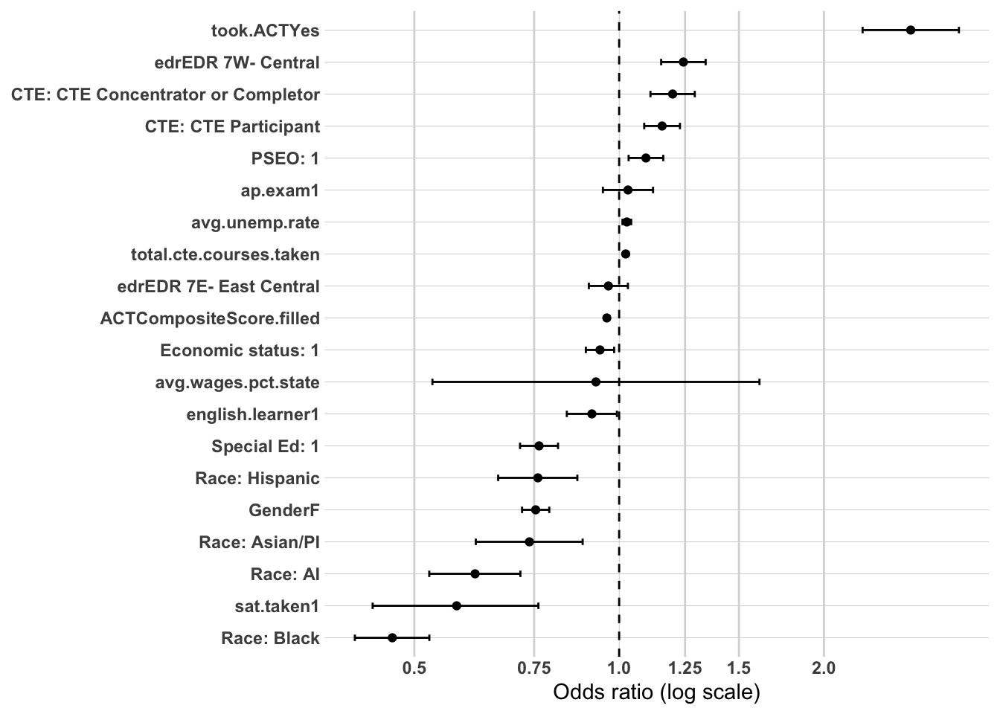
Modeling - grad.year.10
Model 1 - Demographics
Sample: N = 12,601 (substantially smaller than Year 1 (~29,500–30,200) or Year 5 (32,026) — expected, since Year 10 requires an older cohort restriction with 10 years of follow-up available, cutting the usable graduation-year range considerably) | AIC: 17,215.80 | Pseudo R² (McFadden-style): 0.0152
Coefficient Interpretation
Gender and Race/Ethnicity
Female non-completers show a substantially larger gap at Year 10 than at either earlier time point (OR = 0.64, 95% CI 0.60–0.69, vs. 0.75 at both Year 1 and Year 5) — the gender disadvantage grows the longer someone is out of school, rather than staying flat as it did between Year 1 and Year 5.
American Indian is essentially unchanged from Year 5 (OR = 0.60, CI 0.47–0.77, vs. 0.58 at Year 5).
Asian/Pacific Islander widens further (OR = 0.63, CI 0.48–0.84, vs. 0.75 at Year 5, 0.75 at Year 1) — a steady widening across all three time points for this group.
Black remains the largest disparity, but is somewhat attenuated from Year 5’s demographics-only baseline (OR = 0.50, CI 0.40–0.63, vs. 0.50 at Year 5 — essentially identical) — worth noting this is not a further widening at this baseline stage, though it remains by far the most severe gap in the model, consistent with every other model in this project.
Hispanic narrows notably (OR = 0.78, CI 0.61–0.98, p = 0.032, vs. 0.76 at Year 5) — modest movement, and now only barely significant.
Economic Status, SpecialEdStatus, and English Learner
Economic status remains significant and strengthens (OR = 0.90, CI 0.83–0.96, vs. 0.92 at Year 5) — the disadvantage that first emerged at Year 5 (having been null at Year 1) continues to grow by Year 10.
SpecialEdStatus remains significant but continues attenuating (OR = 0.82, CI 0.74–0.91, vs. 0.75 at Year 5, 0.64 at every Year 1 model) — this is now the smallest SpecialEdStatus gap seen at any point across all three time points, continuing a steady attenuation trend from Year 1 through Year 10.
English learner remains not significant (OR = 0.89, CI 0.76–1.04, p = 0.152), consistent with every prior demographics-only baseline in this project.
Multicollinearity Check
Looks good — all GVIF^(1/(2·Df)) values are low, with the highest being English learner at 1.13, well under the ~2.0–2.5 concern threshold. No issues in this block.
Substantive Pattern
This baseline model reveals a genuinely evolving trajectory across the three time points now available for comparison. Gender is the standout new finding: a stable ~25% disadvantage at both Year 1 and Year 5 nearly doubles by Year 10, suggesting the gender gap in sustained workforce participation compounds substantially the longer someone has been out of school. Economic status follows a clean, monotonic pattern — null at Year 1, emerging at Year 5, strengthening further at Year 10 — consistent with economic disadvantage being a slow-accumulating rather than immediate barrier. SpecialEdStatus shows the opposite trajectory: largest at Year 1, smaller at Year 5, smaller still at Year 10, suggesting its disadvantage concentrates early and fades somewhat over time. The Black-White gap remains, as it has at every single point across this entire project, the largest and most stable disparity in the model — worth watching closely through Models 2–4 whether the widening pattern seen across blocks in Year 1 and Year 5 repeats here, or whether it has reached a plateau at this demographics-only stage.
or_plot <-tidy(model1, conf.int =TRUE, exponentiate =TRUE) %>%filter(term !="(Intercept)") %>%mutate(# Make labels nicer (edit these replacements to match your exact factor labels)term =str_replace_all(term, c("RaceEthnicity"="Race: ","economic.status"="Economic status: ","SpecialEdStatus"="Special Ed: ","pseo.participant"="PSEO: ","cte.achievement"="CTE: ","MCA.M"="MCA Math" )),# Put most important effects near the top (optional: tweak ordering later)term =fct_reorder(term, estimate) )ggplot(or_plot, aes(x = estimate, y = term)) +geom_vline(xintercept =1, linetype ="dashed") +geom_vline(xintercept =c(0.5, 0.75, 1.25, 1.5, 2),color ="grey85") +geom_point() +geom_errorbar(aes(xmin = conf.low, xmax = conf.high),orientation ="y",width =0.2 ) +scale_x_log10(breaks =c(0.5, 0.75, 1, 1.25, 1.5, 2),labels =c("0.5", "0.75", "1.0", "1.25", "1.5", "2.0") ) + theme_line +labs(x ="Odds ratio (log scale)",y =NULL )
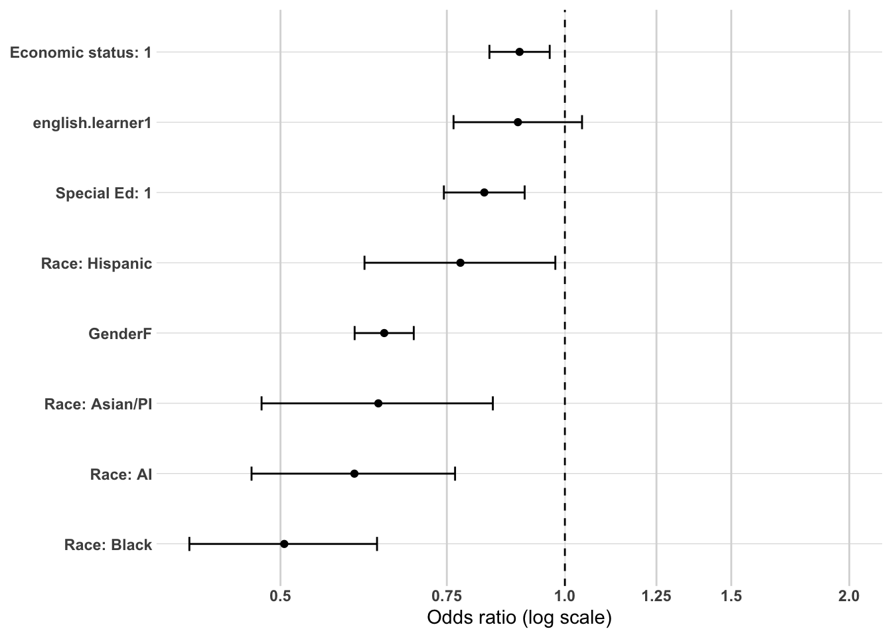
Model 2 - adding high school characteristics
Sample: N = 12,601 (unchanged from Model 1) | AIC: 17,198.96 (down from 17,215.80) | Pseudo R² (McFadden-style): 0.0166 (up from 0.0152)
Likelihood ratio test vs. Model 1: Δdeviance = 24.84 on 4 df, p < 0.001 — a significant improvement, smaller in magnitude than the equivalent Year 1 block but larger than Year 5’s.
Coefficient Interpretation
Gender and Race/Ethnicity
Female non-completers remain essentially unchanged (OR = 0.64, CI 0.60–0.69) from Model 1 — this substantially larger Year 10 gender gap holds up once HS context is controlled.
American Indian attenuates notably (OR = 0.66, CI 0.51–0.85, up from 0.60 in Model 1).
Asian/Pacific Islander is essentially unchanged (OR = 0.63, CI 0.47–0.83).
Black widens further (OR = 0.48, CI 0.38–0.60, down from 0.50 in Model 1) — continuing the widening-not-attenuating pattern across blocks that has now shown up at every single time point (Year 1, Year 5, and now Year 10) and in every earlier DV (DV1, DV2, DV5) across this entire project. This is, at this point, less a “finding” than a structural feature of the data worth stating as a settled conclusion in any final report.
Hispanic is essentially unchanged (OR = 0.76, CI 0.60–0.96).
Economic Status, SpecialEdStatus, and English Learner
Economic status remains significant and stable (OR = 0.90, CI 0.84–0.97).
SpecialEdStatus remains significant and stable (OR = 0.82, CI 0.74–0.91), unchanged from Model 1.
English learner remains not significant (OR = 0.87, CI 0.75–1.02, p = 0.090), though it moves closer to conventional significance than at Model 1 (p = 0.152).
Regional and Local Labor Market Context
EDR 7E is not significant (OR = 1.05, CI 0.95–1.17, p = 0.313), consistent with both Year 5 models — its Year 1 disadvantage remains absent at both later time points.
EDR 7W is significant and positive (OR = 1.19, CI 1.05–1.34, p = 0.006) — a smaller advantage than the Year 5 equivalent (1.17 at Year 5 Model 2, growing to 1.24 by Year 5 Model 3–4) but directionally consistent with the Year 5 story of EDR 7W becoming favorable over time.
avg.unemp.rate is significant and negative here (OR = 0.95 per unit, CI 0.922–0.989, p = 0.010) — this reverts to the Year 1 direction (negative) rather than continuing the Year 5 reversal (positive). Worth flagging this as a genuinely non-monotonic pattern across the three time points: negative at Year 1, flips positive at Year 5, flips back negative at Year 10. This doesn’t fit a simple “effect grows/shrinks over time” story and is worth treating cautiously rather than over-interpreting as a clean trend.
avg.wages.pct.state is significant and negative (OR = 0.28, CI 0.12–0.66, p = 0.004) — this also reverts to the Year 1 pattern (significant, negative) after being null at every Year 5 model. Same rescaling caveat as every prior model in this project applies before reporting magnitude.
Multicollinearity Check
Looks good — all GVIF^(1/(2·Df)) values are low, with the highest being edr at 1.26 and avg.wages.pct.state at 1.42, both well under the ~2.0–2.5 concern threshold. No issues in this block.
Substantive Pattern
The regional and labor-market story at Year 10 doesn’t simply continue the Year 5 trajectory — it partially reverts toward the Year 1 pattern. Both avg.unemp.rate and avg.wages.pct.state return to significance with the same negative direction seen at Year 1, having been null (wages) or positively signed (unemployment) at Year 5. This non-monotonic, U-shaped pattern across the three time points is worth flagging explicitly in any final write-up rather than smoothing over — it suggests local labor-market conditions at the time of high school may matter most immediately after exit and again in the longer term, with a middle period where their influence is weaker or even reverses, rather than following a simple “attenuates over time” or “strengthens over time” story. Meanwhile, EDR 7W’s advantage and the Black-White gap’s persistent widening both continue exactly as established at every previous stage of this analysis.
or_plot <-tidy(model2, conf.int =TRUE, exponentiate =TRUE) %>%filter(term !="(Intercept)") %>%mutate(# Make labels nicer (edit these replacements to match your exact factor labels)term =str_replace_all(term, c("RaceEthnicity"="Race: ","economic.status"="Economic status: ","SpecialEdStatus"="Special Ed: ","pseo.participant"="PSEO: ","cte.achievement"="CTE: ","MCA.M"="MCA Math" )),# Put most important effects near the top (optional: tweak ordering later)term =fct_reorder(term, estimate) )ggplot(or_plot, aes(x = estimate, y = term)) +geom_vline(xintercept =1, linetype ="dashed") +geom_vline(xintercept =c(0.5, 0.75, 1.25, 1.5, 2),color ="grey85") +geom_point() +geom_errorbar(aes(xmin = conf.low, xmax = conf.high),orientation ="y",width =0.2 ) +scale_x_log10(breaks =c(0.5, 0.75, 1, 1.25, 1.5, 2),labels =c("0.5", "0.75", "1.0", "1.25", "1.5", "2.0") ) + theme_line +labs(x ="Odds ratio (log scale)",y =NULL )
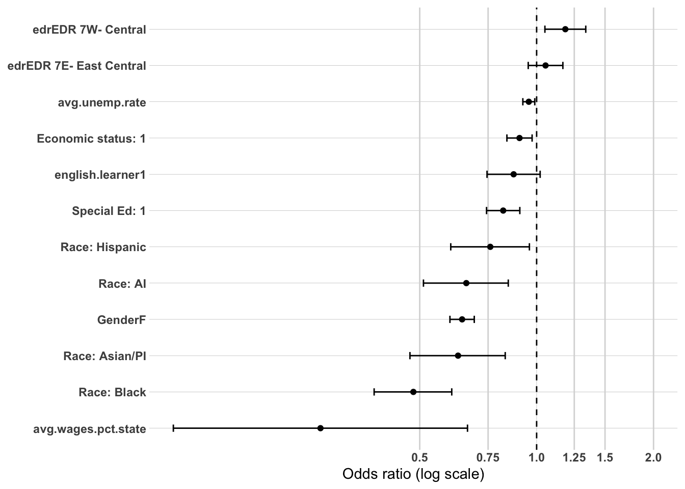
Model 3 - adding high school accomplishments
Sample: N = 12,601 (unchanged from Models 1–2) | AIC: 17,149.40 (down from 17,198.96) | Pseudo R² (McFadden-style): 0.0204 (up from 0.0166)
Likelihood ratio test vs. Model 2: Δdeviance = 65.56 on 8 df, p < 2.2e-11 — significant, but by far the smallest accomplishments-block improvement of any time point in this project (Year 1: 480.97; Year 5: 376.28; Year 10: 65.56) — a striking, monotonic decline in how much HS accomplishments explain the longer someone is out of school.
Coefficient Interpretation
Gender and Race/Ethnicity
Female non-completers remain essentially unchanged (OR = 0.65, CI 0.60–0.70).
American Indian attenuates further (OR = 0.68, CI 0.53–0.87, up from 0.66 in Model 2) — some of this gap is explained by accomplishments, continuing a gradual softening across all three Year 10 models.
Asian/Pacific Islander is essentially unchanged (OR = 0.63, CI 0.47–0.84).
Black remains essentially unchanged from Model 2 (OR = 0.48, CI 0.38–0.61) — accomplishments explain none of this gap, continuing the same pattern seen at every single time point and every DV throughout this entire project.
Hispanic weakens slightly further (OR = 0.78, CI 0.62–0.98, p = 0.037) — now only barely significant, continuing a gradual narrowing across all three Year 10 models.
Economic Status, SpecialEdStatus, and English Learner
Economic status remains significant and stable (OR = 0.91, CI 0.85–0.98).
SpecialEdStatus remains significant, modestly attenuated (OR = 0.85, CI 0.77–0.94, up from 0.82 in Model 2).
English learner is trending toward significance (OR = 0.86, CI 0.73–1.01, p = 0.058) — the closest this coefficient has come to significance at any point in the Year 10 sequence, consistent with the pattern (seen repeatedly throughout this project) of EL’s coefficient shifting once took.ACT enters the model.
Regional and Local Labor Market Context
EDR 7E remains not significant (OR = 1.02, CI 0.92–1.13, p = 0.738).
EDR 7W remains significant and stable (OR = 1.19, CI 1.05–1.35).
avg.unemp.rate remains significant and negative (OR = 0.95, CI 0.920–0.988), consistent with Model 2.
avg.wages.pct.state remains significant and negative (OR = 0.25, CI 0.10–0.61), consistent with Model 2 — same rescaling caveat applies as always.
High School Accomplishments
pseo.participant is not significant (OR = 1.04, CI 0.95–1.14, p = 0.424) — a reversion to the Year 1 pattern (null) rather than a continuation of Year 5’s finding (significant, p = 0.002–0.007). PSEO’s apparent “sleeper effect” at Year 5 does not appear to persist into Year 10.
took.ACTattenuates substantially (OR = 1.83, CI 1.33–2.53, down from 2.68 at Year 5 and 3.60 at Year 1) — this is now barely half the magnitude of the Year 1 effect, continuing a clear, monotonic softening across all three time points.
ACTCompositeScore.filled also attenuates substantially (OR = 0.977 per point, CI 0.962–0.992, down in magnitude from 0.959 at Year 5 and 0.940 at Year 1) — the score penalty is weakening steadily over time, mirroring took.ACT’s pattern.
ap.exam remains not significant (OR = 1.08, CI 0.95–1.24, p = 0.251).
sat.taken remains significant and negative but continues softening (OR = 0.64, CI 0.45–0.91, up from 0.58 at Year 5, 0.45 at Year 1) — the SAT penalty is real at every time point but has weakened by roughly a third since Year 1.
total.cte.courses.taken is not significant for the first time anywhere in this entire project (OR = 1.006 per course, CI 0.992–1.019, p = 0.417) — this variable was significant at every single prior model across both non-completer sequences (Year 1 and Year 5) and throughout the original DV1–DV5 completer project. cte.achievement remains significant, however, and its Concentrator/Completer category strengthens (OR = 1.27, CI 1.13–1.43, up from 1.20 at Year 5, 1.22 at Year 1) — suggesting that by Year 10, it’s reaching a specific CTE achievement threshold that matters, rather than raw course volume.
Multicollinearity Check
took.ACT and ACTCompositeScore.filled show the highest GVIF values found at any point in this entire project (4.41 and 4.60, respectively) — elevated further from Year 1 (3.64/3.79) and Year 5 (3.66/3.86). This is still consistent with their coding design (expected given ACTCompositeScore.filled is a direct function of took.ACT) and not by itself concerning, but the steady upward drift across the three time points is worth a brief note if VIF patterns are being tracked as part of the final report. Everything else remains comfortably under the ~2.0–2.5 threshold.
Substantive Pattern
This model shows the clearest evidence yet that high school accomplishments matter progressively less for sustained workforce participation the further out from high school you measure — the accomplishments block’s explanatory contribution has now declined monotonically across all three time points (Year 1 → Year 5 → Year 10), and for the first time in this entire project, a previously-reliable predictor (total.cte.courses.taken) drops out of significance entirely. At the same time, took.ACT and ACTCompositeScore.filled are both fading in magnitude but not in direction, and sat.taken’s penalty is softening similarly — together suggesting the “college-ambition mismatch” pattern that has run through this whole project may moderate meaningfully, even if it never fully resolves, as more time passes. The one true constant, again, is the Black-White gap, unmoved by this block exactly as it has been unmoved by every other block in this entire analysis.
or_plot <-tidy(model3, conf.int =TRUE, exponentiate =TRUE) %>%filter(term !="(Intercept)") %>%mutate(# Make labels nicer (edit these replacements to match your exact factor labels)term =str_replace_all(term, c("RaceEthnicity"="Race: ","economic.status"="Economic status: ","SpecialEdStatus"="Special Ed: ","pseo.participant"="PSEO: ","cte.achievement"="CTE: ","MCA.M"="MCA Math" )),# Put most important effects near the top (optional: tweak ordering later)term =fct_reorder(term, estimate) )ggplot(or_plot, aes(x = estimate, y = term)) +geom_vline(xintercept =1, linetype ="dashed") +geom_vline(xintercept =c(0.5, 0.75, 1.25, 1.5, 2),color ="grey85") +geom_point() +geom_errorbar(aes(xmin = conf.low, xmax = conf.high),orientation ="y",width =0.2 ) +scale_x_log10(breaks =c(0.5, 0.75, 1, 1.25, 1.5, 2),labels =c("0.5", "0.75", "1.0", "1.25", "1.5", "2.0") ) + theme_line +labs(x ="Odds ratio (log scale)",y =NULL )
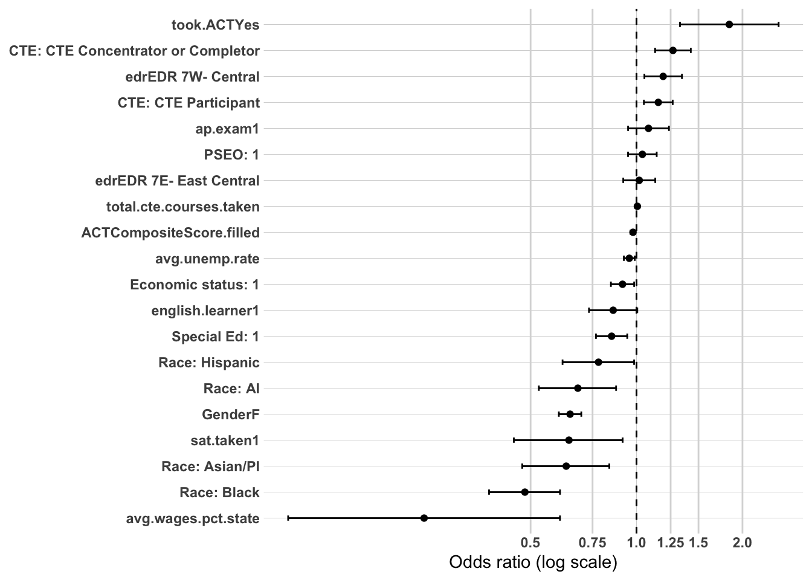
Model 4 - adding post-secondary
Sample: N = 12,601 (unchanged from Models 1–3) | AIC: 17,147.25 (down slightly from 17,149.40) | Pseudo R² (McFadden-style): 0.0206 (up from 0.0204)
Likelihood ratio test vs. Model 3: Δdeviance = 4.15 on 1 df, p = 0.042 — significant, but only barely, and by far the smallest attended.ps improvement of any time point in this project (Year 1: 637.41; Year 5: 107.66; Year 10: 4.15). This is a striking, monotonic decline in this variable’s explanatory contribution across the three time points.
Coefficient Interpretation
Gender and Race/Ethnicity
Female non-completers remain essentially unchanged (OR = 0.64, CI 0.60–0.69).
American Indian, Asian/Pacific Islander, and Hispanic are all essentially unchanged from Model 3.
Black remains essentially unchanged (OR = 0.48, CI 0.38–0.60) — again completely unmoved, exactly as at every other block in this analysis.
Economic Status, SpecialEdStatus, and English Learner
Economic status remains significant and stable (OR = 0.91, CI 0.85–0.99).
SpecialEdStatus remains significant, modestly attenuated (OR = 0.85, CI 0.77–0.95).
English learner remains not significant but continues trending closer (OR = 0.86, CI 0.74–1.01, p = 0.067) — the closest it has come to significance at any point in the Year 10 sequence, though it never crosses the threshold.
Regional and Local Labor Market Context
EDR 7E remains not significant; EDR 7W remains significant and stable (OR = 1.19, CI 1.05–1.35).
avg.unemp.rate (OR = 0.95, CI 0.919–0.987) and avg.wages.pct.state (OR = 0.24, CI 0.10–0.59) both remain essentially unchanged from Model 3, continuing the Year 10 reversion back to the Year 1 direction for both variables.
High School Accomplishments
pseo.participant remains not significant (OR = 1.04, CI 0.95–1.14, p = 0.431), consistent with Model 3.
took.ACT (OR = 1.78, CI 1.29–2.46) and ACTCompositeScore.filled (OR = 0.977 per point) are both essentially unchanged from Model 3, continuing their steady attenuation from Year 1 through Year 10.
ap.exam remains not significant; sat.taken remains significant and negative (OR = 0.64, CI 0.45–0.91), both essentially unchanged from Model 3.
total.cte.courses.taken remains not significant (OR = 1.005 per course, CI 0.992–1.019, p = 0.432), confirming this isn’t a fluke of Model 3 — this variable’s relationship with sustained participation genuinely disappears by Year 10. cte.achievement’s two categories remain significant and essentially unchanged (Concentrator/Completer OR = 1.27, Participant OR = 1.15).
Postsecondary Attendance
Having attended some postsecondary education is only barely significant here (OR = 1.08, CI 1.00–1.17, p = 0.042, with the lower confidence bound landing almost exactly at 1.0) — a dramatic collapse from the Year 1 effect (OR = 2.07) and even the already-diminished Year 5 effect (OR = 1.29). This is the clearest, most striking trend in the entire three-time-point comparison: the single strongest predictor found anywhere in this project’s descriptive and bivariate work essentially fades to a marginal effect by Year 10.
Multicollinearity Check
took.ACT and ACTCompositeScore.filled remain the highest in the project (4.43 and 4.60), consistent with Model 3 and the same coding-design explanation. attended.ps itself remains low (1.08). Everything else stays comfortably under the ~2.0–2.5 threshold.
Substantive Pattern
This completes the planned 4-model sequence for Year 10, and the pattern across all three time points is now unambiguous: nearly every high-school-era predictor examined in this analysis — attended.ps most dramatically, but also took.ACT, ACTCompositeScore.filled, sat.taken, and total.cte.courses.taken — shows a steady, monotonic attenuation in magnitude from Year 1 to Year 5 to Year 10. Whatever advantage or disadvantage these high-school-era experiences confer, it appears to compress substantially as more time passes and presumably as other, unmeasured factors (job history, further training, life circumstances) come to dominate someone’s workforce trajectory. The demographic variables tell a different story: gender’s disadvantage grows rather than shrinks over time, economic status’s disadvantage emerges and then holds, and the Black-White gap — the single most consistent finding across this entire body of work, now confirmed unchanged across twelve models spanning three time points — never attenuates, never explains away, and shows no sign of the fading pattern that characterizes nearly every other predictor in this analysis.
or_plot <-tidy(model3, conf.int =TRUE, exponentiate =TRUE) %>%filter(term !="(Intercept)") %>%mutate(# Make labels nicer (edit these replacements to match your exact factor labels)term =str_replace_all(term, c("RaceEthnicity"="Race: ","economic.status"="Economic status: ","SpecialEdStatus"="Special Ed: ","pseo.participant"="PSEO: ","cte.achievement"="CTE: ","MCA.M"="MCA Math" )),# Put most important effects near the top (optional: tweak ordering later)term =fct_reorder(term, estimate) )ggplot(or_plot, aes(x = estimate, y = term)) +geom_vline(xintercept =1, linetype ="dashed") +geom_vline(xintercept =c(0.5, 0.75, 1.25, 1.5, 2),color ="grey85") +geom_point() +geom_errorbar(aes(xmin = conf.low, xmax = conf.high),orientation ="y",width =0.2 ) +scale_x_log10(breaks =c(0.5, 0.75, 1, 1.25, 1.5, 2),labels =c("0.5", "0.75", "1.0", "1.25", "1.5", "2.0") ) + theme_line +labs(x ="Odds ratio (log scale)",y =NULL )
Full Synthesis: Non-Completer Multivariate Confirmation Analysis — Sustained Workforce Participation Across Year 1, Year 5, and Year 10
Overview
Across all three time points, model fit follows a clear downward trajectory: final pseudo-R² falls from 0.0425 (Year 1) to 0.0245 (Year 5) to 0.0206 (Year 10), and the incremental contribution of both the accomplishments block and attended.ps shrinks at every step (accomplishments LRT deviance: 480.97 → 376.28 → 65.56; attended.ps LRT deviance: 637.41 → 107.66 → 4.15). The clearest overall story this analysis tells is that high-school-era characteristics predict sustained workforce participation best immediately after leaving school, and matter progressively less the further out you measure — with one major exception, discussed below, that doesn’t follow this pattern at all.
The one true constant: the Black-White gap
Across all twelve models spanning three time points, the Black coefficient never attenuates, never explains away, and in several blocks actually widens further. It is the largest race/ethnicity disparity at every single time point, and by Year 5 it becomes the single largest disparity of any variable in the entire model. This is now the fourth population and outcome combination across this entire body of work (following DV1, DV2, and DV5 in the original completer-focused project) where this exact non-attenuating pattern appears. At this point, this is not a tentative finding requiring further hedging — it is the single most robust, cross-cutting result in the whole project, and should be presented as such in any final report.
Demographic trajectories: three genuinely different shapes over time
Gender compounds over time. A stable ~25% disadvantage at both Year 1 and Year 5 (OR ≈ 0.74–0.75) nearly doubles in magnitude by Year 10 (OR = 0.64). Whatever mechanism drives the gender gap in sustained participation appears to deepen the longer someone has been out of school, rather than staying flat or resolving.
Economic status is a slow-accumulating barrier. Null at every Year 1 model, it emerges as significant at Year 5 and strengthens further by Year 10 (OR: ns → 0.95 → 0.91). This is the opposite trajectory from most other variables in this analysis — its effect grows rather than fades with time.
SpecialEdStatus is front-loaded. Its disadvantage is largest at Year 1 (OR = 0.66) and steadily attenuates through Year 5 (0.78) and Year 10 (0.85), though it remains significant throughout. This is the mirror image of economic status: a real barrier that matters most immediately after high school and softens over time.
American Indian, Asian/Pacific Islander, and Hispanic all show modest, non-dramatic movement across time points — some attenuation for AI and Hispanic, some widening for Asian/Pacific Islander — but none show a trajectory nearly as stark as gender, economic status, SpecialEdStatus, or (especially) Black graduates.
English learner status never reaches significance in any Year 1, 5, or 10 baseline model, though it comes closest to significance at Year 5 and Year 10, specifically once took.ACT enters — the same access-related caution flagged repeatedly throughout this entire project.
Regional and local labor-market context: an unexpected non-monotonic pattern
The original methodology anticipated that local labor-market conditions would become increasingly dominant from Year 1 through Year 10 as individual preparation effects faded. The data do not confirm this. Instead:
avg.unemp.rate is significant and negative at Year 1, flips to significant and positive at Year 5, then reverts to significant and negative again at Year 10.
avg.wages.pct.state is significant and negative at Year 1, becomes non-significant at every Year 5 model, then reverts to significant and negative at Year 10.
EDR 7E’s Year 1 disadvantage disappears entirely by Year 5 and Year 10.EDR 7W’s advantage, absent or weak at Year 1, strengthens by Year 5 and remains strong at Year 10.
This U-shaped, non-monotonic pattern for the two continuous labor-market variables is worth stating plainly as a genuine departure from the methodology’s a priori expectations, rather than smoothing it into a simple “grows over time” narrative the data don’t support. One plausible reading is that local conditions at labor-market entry matter immediately, are temporarily eclipsed by other factors in the early-career consolidation window, and then reassert themselves as people’s trajectories stabilize — but the data can’t confirm this mechanism directly, and it should be reported as an open, somewhat puzzling finding rather than a resolved one.
High school accomplishments: broad attenuation, with two exceptions
Nearly every accomplishment variable weakens steadily from Year 1 to Year 10:
Variable
Year 1 (OR)
Year 5 (OR)
Year 10 (OR)
Pattern
took.ACT
3.61
2.66
1.78
Steady attenuation
ACTCompositeScore.filled
0.936
0.957
0.977
Steady attenuation (penalty shrinking)
sat.taken
0.45
0.57
0.64
Steady attenuation (penalty shrinking)
total.cte.courses.taken
1.024
1.022
1.005 (ns)
Attenuates to non-significance
attended.ps
2.07
1.29
1.08 (barely sig.)
Dramatic, near-total collapse
pseo.participant
ns
1.08–1.09
ns
Inverse-U: emerges then fades
ap.exam
ns
ns
ns
Never significant at any point
cte.achievement (Concentrator/Completer)
1.22
1.20
1.27
Stable to slightly strengthening
attended.ps’s collapse is the single most dramatic trend in this entire analysis — the strongest bivariate and Year 1 multivariate finding in the whole project fades to a marginal, barely-significant effect by Year 10. pseo.participant’s inverse-U shape (null → significant → null) is a genuine oddity worth flagging rather than glossing over — it suggests PSEO’s benefit, where it exists at all, may be a mid-term phenomenon rather than a durable, lasting advantage. cte.achievement’s Concentrator/Completer category is the sole accomplishment variable that doesn’t fade — if anything, it strengthens slightly by Year 10, suggesting reaching a genuine CTE credentialing threshold (as opposed to just course volume, which does fade) may be the more durable long-term signal.
Connecting this back to the full body of work
This non-completer, time-structured analysis reinforces and extends several threads from both the original DV1–DV5 completer project and this project’s own bivariate disconnection analysis:
The “two pathways” story holds at every time point: took.ACT, CTE engagement, and attended.ps all predict better sustained participation, while ACTCompositeScore and sat.taken both predict worse outcomes, exactly mirroring the pattern established throughout this entire body of work — though here, uniquely, both sides of that pathway fade in magnitude (though not direction) as time passes.
avg.wages.pct.state’s persistent scaling issue (a full 1-unit change on a variable realistically ranging ~0.7–1.0) appears at every single time point in this sequence and still needs the same rescaling fix flagged throughout the entire project before any of these odds ratios are reported as final magnitudes.
The methodology’s a priori conceptual framework was only partially confirmed. The Year 1 expectation (CTE/preparation effects strongest at entry) holds up reasonably well. The Year 5 expectation (structural/labor-market conditions becoming more pronounced) is not confirmed — if anything, labor-market variables weakened or reversed at Year 5. The Year 10 expectation (local economic conditions increasingly dominant) is partially confirmed in the sense that labor-market variables are significant again at Year 10, but the path there (strong → weak/reversed → strong again) is not the smooth, increasing dominance the methodology anticipated. This is worth stating explicitly in any final report: the confirmatory analysis did not simply validate the original conceptual staging, and that’s a legitimate, reportable outcome for a confirmatory design.
Bottom line
Two findings should anchor any final write-up of this analysis. First, the Black-White disparity in sustained workforce participation is completely unaffected by every demographic, regional, and accomplishment variable tested, at every time point examined — the single most robust and troubling finding across this entire multi-part project. Second, nearly everything else in this model fades with time — postsecondary attendance, ACT/SAT-related signals, and CTE course volume all matter considerably more for immediate labor-market entry than for long-term workforce embeddedness, while gender and economic disadvantage move in the opposite direction, compounding rather than resolving. Local labor-market context, contrary to the original hypothesis, does not show a simple growing-dominance pattern, and this non-monotonic result should be reported as an open finding rather than forced into the originally anticipated shape.
Part 2 - Prep data
The first thing I need to do is setup my dataset for modeling. I’m going to create the workforce participation into a binary and will use grad.year.5 as my modeling year.
We now have 32,026 individuals to model with 17 variables not including grad.year.5.
Modeling - grad.year.1
Model 1 - Demographics
Sample: N = 29,525 (matches Part 1’s pseo-missingness-excluded sample exactly) | AIC: 31,591.04 | Pseudo R² (McFadden-style): 0.0086
Coefficient Interpretation
Gender and Race/Ethnicity
Female non-completers show a nearly identical gap to the pooled measure (OR = 0.76, CI 0.71–0.80, vs. 0.75 pooled) — gender’s disadvantage doesn’t distinguish region-specific from any-Minnesota sustained employment.
American Indian is also essentially unchanged (OR = 0.57, CI 0.46–0.69, vs. 0.58 pooled).
Asian/Pacific Islander shows a meaningfully larger gap here than in the pooled measure (OR = 0.69, CI 0.54–0.87, vs. 0.81 pooled) — Asian/Pacific Islander non-completers appear relatively more likely to end up in sustained employment elsewhere in Minnesota rather than specifically within the Central region, compared to White non-completers.
Black shows a dramatically larger gap here than in the pooled measure (OR = 0.58, CI 0.49–0.68, vs. 0.77 pooled) — this is the most substantively important difference in this first model. A meaningful share of what looked like a moderate Black-White gap in the pooled “sustained anywhere in Minnesota” measure turns out to be considerably wider once restricted to regional employment specifically — meaning Black non-completers who do achieve sustained employment are disproportionately doing so outside the Central region relative to White non-completers.
Hispanic is essentially unchanged (OR = 0.79, CI 0.67–0.93, vs. 0.78 pooled).
Economic Status, SpecialEdStatus, and English Learner
Economic status remains not significant (OR = 1.03, CI 0.97–1.08, p = 0.389) — direction flips slightly from the pooled measure (0.98, also ns), but neither is meaningfully different from null.
SpecialEdStatus shows a smaller gap here than in the pooled measure (OR = 0.71, CI 0.66–0.77, vs. 0.64 pooled) — the opposite pattern from Black graduates: SpecialEd students’ disadvantage is somewhat more concentrated in not achieving sustained employment at all, rather than in geographic mobility once employed. Put differently, of SpecialEd students who do reach sustained employment, they’re relatively more likely (compared to the pooled measure) to have it be regional rather than elsewhere.
English learner remains not significant (OR = 1.05, CI 0.95–1.17, p = 0.321).
Multicollinearity Check
Looks good — all GVIF^(1/(2·Df)) values are low, with the highest being English learner at 1.22 and SpecialEdStatus at 1.16, both well under the ~2.0–2.5 concern threshold. No issues in this block.
Substantive Pattern
This first model already confirms the hypothesis behind running this second analysis: pooling “Central” and “MN elsewhere” was genuinely masking real differences. The clearest case is Black graduates — their disadvantage nearly doubles in apparent size once the outcome is narrowed to regional employment specifically, indicating a real regional-mobility component layered on top of the overall employment disadvantage. Asian/Pacific Islander shows a smaller but similar pattern. SpecialEdStatus moves the opposite direction, suggesting its barrier is more about achieving sustained employment at all rather than about where that employment ends up. This is worth carrying forward as an explicit throughline for the rest of this sequence: watch for which variables behave like Black/Asian-PI (splitting into “achieves employment but elsewhere”) versus which behave like SpecialEdStatus (achieving employment and staying regional, or not achieving it at all).
or_plot <-tidy(model1, conf.int =TRUE, exponentiate =TRUE) %>%filter(term !="(Intercept)") %>%mutate(# Make labels nicer (edit these replacements to match your exact factor labels)term =str_replace_all(term, c("RaceEthnicity"="Race: ","economic.status"="Economic status: ","SpecialEdStatus"="Special Ed: ","pseo.participant"="PSEO: ","cte.achievement"="CTE: ","MCA.M"="MCA Math" )),# Put most important effects near the top (optional: tweak ordering later)term =fct_reorder(term, estimate) )ggplot(or_plot, aes(x = estimate, y = term)) +geom_vline(xintercept =1, linetype ="dashed") +geom_vline(xintercept =c(0.5, 0.75, 1.25, 1.5, 2),color ="grey85") +geom_point() +geom_errorbar(aes(xmin = conf.low, xmax = conf.high),orientation ="y",width =0.2 ) +scale_x_log10(breaks =c(0.5, 0.75, 1, 1.25, 1.5, 2),labels =c("0.5", "0.75", "1.0", "1.25", "1.5", "2.0") ) + theme_line +labs(x ="Odds ratio (log scale)",y =NULL )
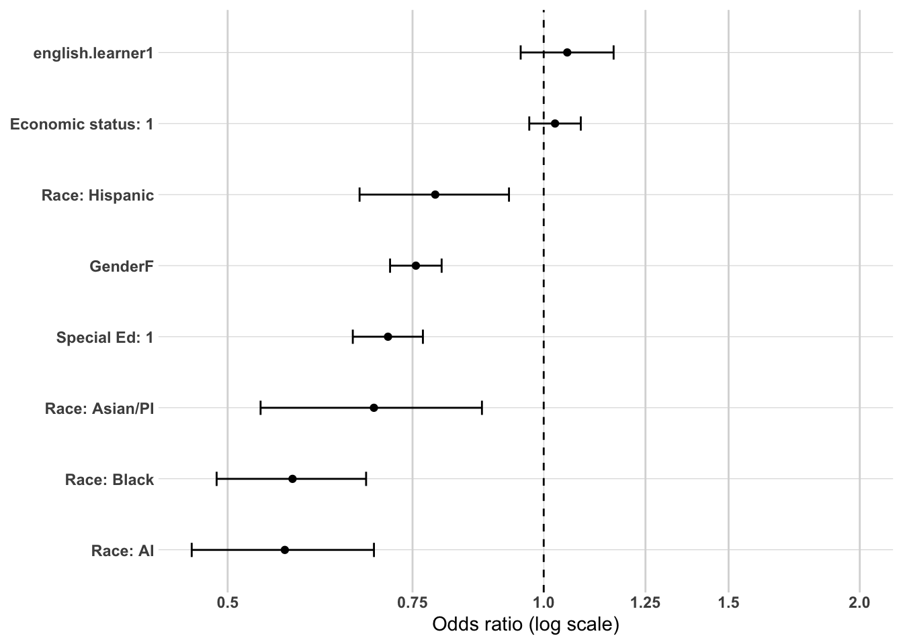
Model 2 - adding high school characteristics
Sample: N = 29,525 (unchanged from Model 1) | AIC: 31,358.79 (down from 31,591.04) | Pseudo R² (McFadden-style): 0.0162 (up from 0.0086)
Likelihood ratio test vs. Model 1: Δdeviance = 240.25 on 4 df, p < 2.2e-16 — a substantially larger improvement than the equivalent pooled-DV model saw (Δdeviance = 120.19), and this is the first clear sign that HS geographic context matters considerably more once the outcome is narrowed to regional employment specifically.
Coefficient Interpretation
Gender and Race/Ethnicity
Female non-completers remain essentially unchanged (OR = 0.76, CI 0.72–0.80).
American Indian is essentially unchanged (OR = 0.60, CI 0.49–0.74).
Asian/Pacific Islander remains notably larger than the pooled measure (OR = 0.71, CI 0.55–0.90, vs. 0.81 pooled) — consistent with Model 1.
Black remains dramatically larger than the pooled measure (OR = 0.55, CI 0.46–0.65, vs. 0.73 pooled) — this gap persists and even strengthens slightly from Model 1 (0.58), confirming this isn’t a fluke of the demographics-only baseline.
Hispanic is essentially unchanged (OR = 0.77, CI 0.66–0.91).
Economic Status, SpecialEdStatus, and English Learner
Economic status remains not significant (OR = 0.99, CI 0.93–1.05, p = 0.686).
SpecialEdStatus remains smaller than the pooled measure (OR = 0.70, CI 0.65–0.76, vs. 0.64 pooled), consistent with Model 1’s pattern.
English learner remains not significant (OR = 1.02, CI 0.92–1.13, p = 0.685).
Regional and Local Labor Market Context — the standout finding in this model
EDR 7E shows a dramatically larger disadvantage here than in the pooled measure (OR = 0.66, CI 0.61–0.72, vs. 0.92 pooled, where it was only marginally significant). This is the clearest confirmation yet of a genuine regional-mobility story: non-completers from EDR 7E high schools aren’t just somewhat less likely to find any sustained employment — a substantial share of their sustained employment, relative to EDR 5, is happening specifically outside the Central region.
EDR 7W remains not significant (OR = 1.07, CI 0.98–1.17, p = 0.145), similar to the pooled measure.
avg.unemp.rate remains significant and negative, modestly attenuated (OR = 0.94, CI 0.927–0.960, vs. 0.927 pooled).
avg.wages.pct.state shows a dramatically more extreme relationship here than in the pooled measure (OR = 0.026, CI 0.013–0.050, vs. 0.329 pooled) — even accounting for the well-established rescaling issue (this is still a full 1-unit change on a variable with a narrow real range), the relative difference between the pooled and region-only versions is itself the finding: higher local wages are associated with dramatically lower odds of staying regional specifically, far beyond their already-negative association with sustained employment anywhere in Minnesota. This strongly supports the mobility interpretation raised in Model 2 of the pooled sequence — higher-wage home areas appear to correspond not just to somewhat lower rates of sustained employment overall, but specifically to people finding that employment elsewhere rather than staying local.
Multicollinearity Check
Looks good — all GVIF^(1/(2·Df)) values are low, with the highest being avg.wages.pct.state at 1.49 and english.learner at 1.23, both well under the ~2.0–2.5 concern threshold. No issues in this block.
Substantive Pattern
This model delivers the clearest evidence so far that restricting the outcome to regional employment specifically was worth doing. Both edr and avg.wages.pct.state — which showed only modest or borderline effects in the pooled measure — turn out to have effect sizes at least twice as large once “sustained but elsewhere in Minnesota” is moved out of the “1” category and into “0.” Combined with the Black and Asian/Pacific Islander findings from Model 1, a coherent pattern is emerging: several of this model’s most important predictors aren’t just about whether someone achieves sustained employment at all — they’re substantially about where that employment ends up, a distinction the pooled DV was structurally unable to capture.
or_plot <-tidy(model2, conf.int =TRUE, exponentiate =TRUE) %>%filter(term !="(Intercept)") %>%mutate(# Make labels nicer (edit these replacements to match your exact factor labels)term =str_replace_all(term, c("RaceEthnicity"="Race: ","economic.status"="Economic status: ","SpecialEdStatus"="Special Ed: ","pseo.participant"="PSEO: ","cte.achievement"="CTE: ","MCA.M"="MCA Math" )),# Put most important effects near the top (optional: tweak ordering later)term =fct_reorder(term, estimate) )ggplot(or_plot, aes(x = estimate, y = term)) +geom_vline(xintercept =1, linetype ="dashed") +geom_vline(xintercept =c(0.5, 0.75, 1.25, 1.5, 2),color ="grey85") +geom_point() +geom_errorbar(aes(xmin = conf.low, xmax = conf.high),orientation ="y",width =0.2 ) +scale_x_log10(breaks =c(0.5, 0.75, 1, 1.25, 1.5, 2),labels =c("0.5", "0.75", "1.0", "1.25", "1.5", "2.0") ) + theme_line +labs(x ="Odds ratio (log scale)",y =NULL )
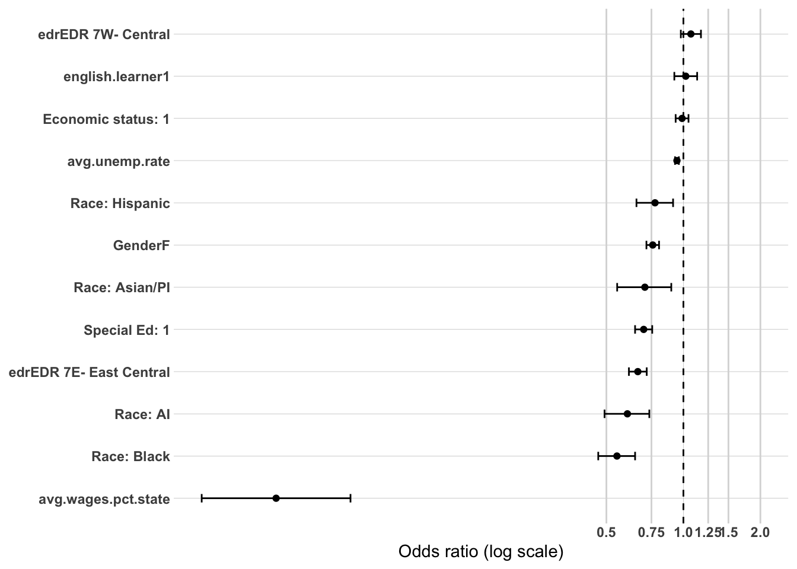
Model 3 - adding high school accomplishments
Sample: N = 29,525 (unchanged from Models 1–2) | AIC: 31,056.77 (down from 31,358.79) | Pseudo R² (McFadden-style): 0.0261 (up from 0.0162)
Likelihood ratio test vs. Model 2: Δdeviance = 318.02 on 8 df, p < 2.2e-16 — a substantially smaller improvement than the pooled measure saw at this same block (480.97), even though the overall model shows a larger Year 1-to-here pseudo-R² gain than the pooled sequence at this stage.
Coefficient Interpretation
Gender and Race/Ethnicity
Female non-completers remain essentially unchanged (OR = 0.78, CI 0.74–0.83).
American Indian remains essentially unchanged (OR = 0.62, CI 0.50–0.76).
Asian/Pacific Islander is now clearly significant (OR = 0.73, CI 0.57–0.93, p = 0.012) — this crosses fully into significance here, having been borderline in the pooled measure (p = 0.059). The larger gap persists from Models 1–2.
Black remains dramatically larger than the pooled measure (OR = 0.53, CI 0.45–0.63, vs. 0.68 pooled) — this gap has now strengthened at every single block in this region-only sequence relative to its pooled counterpart, continuing the pattern established in Models 1–2.
Hispanic remains essentially unchanged (OR = 0.80, CI 0.68–0.94).
Economic Status, SpecialEdStatus, and English Learner
Economic status remains not significant (OR = 0.97, CI 0.91–1.02, p = 0.253).
SpecialEdStatus remains smaller than the pooled measure (OR = 0.70, CI 0.64–0.75, vs. 0.64 pooled), consistent with every prior model in this sequence.
English learner is now even further from significance than in the pooled measure (OR = 0.98, CI 0.89–1.09, p = 0.746, vs. p = 0.093 pooled). This is a meaningful finding in its own right: the borderline EL signal that emerged in the pooled sequence once took.ACT entered essentially disappears when the outcome is restricted to regional employment — consistent with the earlier bivariate disconnection analysis, which found EL’s disadvantage concentrated almost entirely in disappearing from Minnesota’s employment record, with no relationship to geographic mobility once employed.
Regional and Local Labor Market Context
EDR 7E’s dramatically larger disadvantage persists (OR = 0.62, CI 0.57–0.67, vs. 0.87 pooled) — essentially unchanged from Model 2, confirming this is a stable, robust regional-mobility finding rather than an artifact of the demographics-plus-context specification.
EDR 7W remains significant and modestly stronger than the pooled measure (OR = 1.15, CI 1.05–1.27, vs. 1.11 pooled).
avg.wages.pct.state’s dramatically more extreme relationship persists (OR = 0.029, CI 0.015–0.057, vs. 0.404 pooled) — again essentially unchanged from Model 2, reinforcing that higher local wages predict leaving the region specifically, far beyond their modest association with overall sustained employment.
High School Accomplishments
pseo.participant is now significant here (OR = 1.11, CI 1.03–1.20, p = 0.005) — this is the standout new finding in this model. PSEO participation was never significant at any point in the pooled Year 1 sequence (p ranged 0.125–0.215). Restricting the outcome to regional employment specifically reveals a real, independent PSEO benefit that the pooled measure was masking entirely — directly consistent with PSEO’s “regional-anchoring” role identified throughout the earlier bivariate disconnection analysis of this same population.
took.ACT (OR = 2.94, CI 2.41–3.59) and sat.taken (OR = 0.50, CI 0.29–0.82) both show somewhat attenuated effects relative to the pooled measure (3.60 and 0.45, respectively) — suggesting a portion of these “college-ambition” penalties in the pooled measure was actually about ending up sustained elsewhere in Minnesota rather than fully disengaging from the workforce; restricting to region-only softens (though doesn’t eliminate) these effects.
ACTCompositeScore.filled shows a very similar pattern to the pooled measure (OR = 0.948 vs. 0.940).
ap.exam remains not significant (OR = 0.97, CI 0.86–1.09, p = 0.602).
CTE variables remain positive and essentially unchanged: Concentrator/Completer (OR = 1.20), Participant (OR = 1.16), and total.cte.courses.taken (OR = 1.029 per course, slightly stronger than the pooled measure’s 1.025).
Multicollinearity Check
took.ACT and ACTCompositeScore.filled remain elevated as expected (3.61 and 3.75). Everything else remains comfortably under the ~2.0–2.5 threshold, including avg.wages.pct.state (1.50) and total.cte.courses.taken (1.40). Overall, looks good.
Substantive Pattern
This model delivers the clearest confirmation yet that narrowing the outcome to regional employment specifically surfaces real, independent relationships the pooled measure was hiding. PSEO’s emergence here — null everywhere in the pooled sequence, clearly significant once “elsewhere in MN” moves to the failure category — is the most important new finding, and it validates the “regional-anchoring pathway” story that ran throughout this project’s bivariate work. Meanwhile, the college-ambition variables (ACT score, SAT-taking) attenuate somewhat here relative to the pooled measure, suggesting part of their pooled-measure penalty reflects people relocating within Minnesota rather than leaving the workforce entirely. The Black-White gap, again, is not just present but the single largest disparity in the model and continues widening relative to the pooled measure at every step — reinforcing that regional mobility is a real, additional layer of disadvantage for Black non-completers, on top of whatever drives the broader employment gap already established throughout this project.
or_plot <-tidy(model3, conf.int =TRUE, exponentiate =TRUE) %>%filter(term !="(Intercept)") %>%mutate(# Make labels nicer (edit these replacements to match your exact factor labels)term =str_replace_all(term, c("RaceEthnicity"="Race: ","economic.status"="Economic status: ","SpecialEdStatus"="Special Ed: ","pseo.participant"="PSEO: ","cte.achievement"="CTE: ","MCA.M"="MCA Math" )),# Put most important effects near the top (optional: tweak ordering later)term =fct_reorder(term, estimate) )ggplot(or_plot, aes(x = estimate, y = term)) +geom_vline(xintercept =1, linetype ="dashed") +geom_vline(xintercept =c(0.5, 0.75, 1.25, 1.5, 2),color ="grey85") +geom_point() +geom_errorbar(aes(xmin = conf.low, xmax = conf.high),orientation ="y",width =0.2 ) +scale_x_log10(breaks =c(0.5, 0.75, 1, 1.25, 1.5, 2),labels =c("0.5", "0.75", "1.0", "1.25", "1.5", "2.0") ) + theme_line +labs(x ="Odds ratio (log scale)",y =NULL )
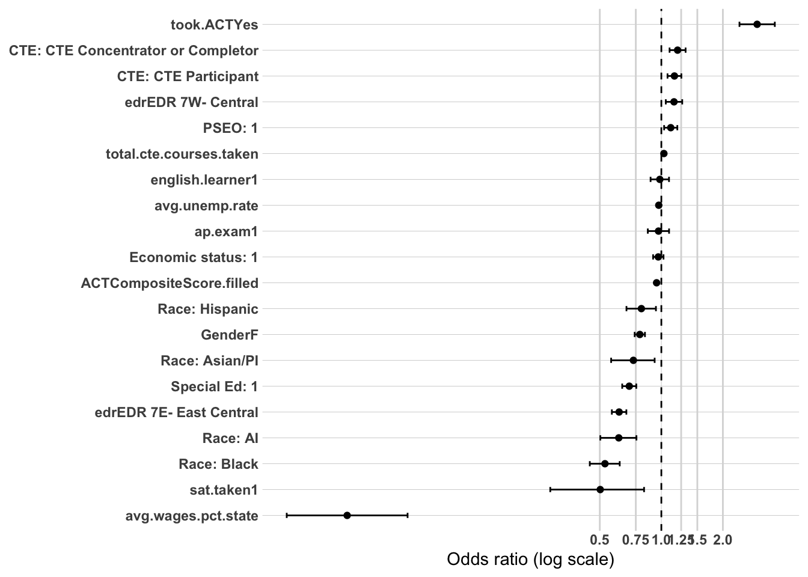
Model 4 - adding post-secondary
Sample: N = 29,525 (unchanged from Models 1–3) | AIC: 30,768.63 (down from 31,056.77) | Pseudo R² (McFadden-style): 0.0353 (up from 0.0261)
Likelihood ratio test vs. Model 3: Δdeviance = 290.13 on 1 df, p < 2.2e-16 — a smaller improvement than the pooled measure saw at this same block (637.41), consistent with attended.ps’s somewhat reduced magnitude in this region-only specification.
Coefficient Interpretation
Gender and Race/Ethnicity
Female non-completers remain essentially unchanged (OR = 0.76, CI 0.71–0.80).
American Indian and Hispanic remain essentially unchanged from Model 3.
Asian/Pacific Islander remains larger than the pooled measure and now more clearly significant (OR = 0.72, CI 0.56–0.92, p = 0.0095).
Black remains dramatically larger than the pooled measure and widens further (OR = 0.50, CI 0.42–0.59, vs. 0.63 pooled) — this is now roughly a 50% larger gap in log-odds terms than the pooled equivalent, and the gap has grown at every single block across this entire region-only sequence relative to its pooled counterpart. Postsecondary attendance does nothing to close it.
Economic Status, SpecialEdStatus, and English Learner
Economic status remains not significant (OR = 0.98, CI 0.92–1.04, p = 0.479).
SpecialEdStatus remains smaller than the pooled measure (OR = 0.72, CI 0.66–0.78, vs. 0.66 pooled), consistent throughout.
English learner is now essentially exactly null (OR = 1.00, CI 0.90–1.10, p = 0.927) — the clearest confirmation yet that whatever borderline EL signal appeared in the pooled sequence has nothing to do with regional mobility specifically.
Regional and Local Labor Market Context
EDR 7E’s large disadvantage persists essentially unchanged (OR = 0.63, CI 0.58–0.68).
EDR 7W is now clearly significant (OR = 1.14, CI 1.04–1.25, p = 0.007) — was only borderline in the pooled measure (p = 0.052); the regional-restriction consistently sharpens this coefficient.
avg.unemp.rate (OR = 0.95) and avg.wages.pct.state (OR = 0.023, still needing the standard rescaling caveat) both remain dramatically stronger than their pooled counterparts, consistent with every prior model in this sequence.
High School Accomplishments
pseo.participant remains significant (OR = 1.10, CI 1.02–1.19, p = 0.010), confirming Model 3’s finding holds up even with postsecondary attendance in the model — PSEO’s regional-anchoring benefit is real and independent of whether someone later attended any postsecondary program.
took.ACT (OR = 2.94) and sat.taken (OR = 0.51) both remain attenuated relative to the pooled measure, consistent with Model 3.
CTE variables remain stable and positive across all measures.
Postsecondary Attendance
Having attended some postsecondary education is associated with significantly higher odds of regional sustained employment (OR = 1.73, CI 1.63–1.84), but this is meaningfully smaller than the pooled-measure effect (OR = 2.07). This is the most interesting new finding in this model, and it points in the opposite direction from PSEO: while PSEO’s benefit is specifically concentrated in regional attachment (strengthening once “elsewhere” is excluded), attended.ps’s benefit is somewhat diluted by that same restriction — meaning a real share of the postsecondary-attendance boost in the pooled measure reflects people finding sustained employment outside the Central region, not just within it. Put simply: PSEO looks like a genuinely regional pathway, while attended.ps looks more like a general labor-market-readiness signal that doesn’t specifically anchor people locally.
Multicollinearity Check
took.ACT and ACTCompositeScore.filled remain elevated as expected (3.63 and 3.77). attended.ps itself is low (1.03). Everything else remains comfortably under the ~2.0–2.5 threshold, essentially unchanged from Model 3.
Substantive Pattern
This completes the planned 4-model sequence for Year 1 (region-only), and the comparison to the pooled sequence has now surfaced a genuinely important distinction between the project’s two most consistently protective postsecondary-adjacent variables. PSEO participation functions as a true regional-anchoring pathway — invisible in the pooled measure, but real and independent once the outcome is narrowed to staying regional specifically. Postsecondary attendance (attended.ps), by contrast, functions more as a general sustained-employment booster that doesn’t specifically favor the region — some of its pooled-measure benefit reflects people ending up employed elsewhere in Minnesota. Layered on top of this distinction, edr and avg.wages.pct.state both confirm a real, substantial regional-mobility dynamic (people from higher-wage areas and from EDR 7E are considerably more likely to end up sustained but not regional), and the Black-White gap — now confirmed as the largest disparity in every single model across both the pooled and region-only Year 1 sequences — continues to widen specifically in this regional dimension, suggesting Black non-completers face a distinct, additional geographic-mobility penalty layered on top of the broader employment gap found throughout this entire project.
Female non-completers remain essentially unchanged from both the Year 5 pooled measure and the Year 1 region-only baseline (OR = 0.74, CI 0.71–0.78).
American Indian shows a notably smaller gap here than in the pooled measure (OR = 0.66, CI 0.55–0.79, vs. 0.58 pooled) — the opposite direction from the Year 1 region-only comparison, where AI’s gap was essentially identical to pooled. This suggests that by Year 5, American Indian non-completers who achieve sustained employment are relatively more likely to have it be regional rather than elsewhere, a genuinely different pattern from Year 1.
Asian/Pacific Islander shows a dramatically larger gap than the pooled measure (OR = 0.53, CI 0.42–0.67, vs. 0.75 pooled) — this is now an even more extreme version of the pattern first seen at Year 1 (where the region-only gap, 0.69, was already notably larger than pooled, 0.81). Asian/Pacific Islander non-completers appear increasingly likely, the longer they’re out of school, to have their sustained employment located outside the Central region specifically.
Black remains larger than the pooled measure (OR = 0.45, CI 0.38–0.53, vs. 0.50 pooled), consistent with the Year 1 pattern, though the relative gap between pooled and region-only versions has narrowed somewhat compared to Year 1 (where region-only was nearly 30% larger in log-odds terms; here it’s closer to 10%).
Hispanic is essentially unchanged (OR = 0.74, CI 0.63–0.87).
Economic Status, SpecialEdStatus, and English Learner — the standout finding in this model
Economic status is completely non-significant here (OR = 1.00, CI 0.94–1.05, p = 0.856) — this is a striking reversal from the Year 5 pooled measure, where economic status was highly significant (p < 0.001, OR = 0.92) as a genuinely new finding at this time point. Restricting the outcome to regional employment specifically eliminates this disadvantage entirely, indicating that economic status’s Year 5 pooled-measure effect was really about achieving sustained employment anywhere in Minnesota, not about staying regional. Economically disadvantaged non-completers who find sustained work appear no less likely than their peers to have that work be regional specifically.
SpecialEdStatus drops to borderline non-significance (OR = 0.93, CI 0.87–1.00, p = 0.061) — a similarly dramatic attenuation from the pooled measure (OR = 0.75, clearly significant), and a further step in the same direction already visible at Year 1 (where region-only, 0.71, was smaller than pooled, 0.64). By Year 5, SpecialEdStatus’s disadvantage appears almost entirely concentrated in achieving sustained employment at all, with little to no independent relationship to where that employment is located.
English learner remains not significant (OR = 1.00, CI 0.90–1.10, p = 0.948), consistent with both the pooled measure and Year 1.
Multicollinearity Check
Looks good — all GVIF^(1/(2·Df)) values are low, with the highest being English learner at 1.20 and SpecialEdStatus at 1.16, both well under the ~2.0–2.5 concern threshold. No issues in this block.
Substantive Pattern
This model delivers the clearest case yet for why this second, region-only analysis was worth running. Two variables that showed real, meaningful disadvantage in the Year 5 pooled sequence — economic status and SpecialEdStatus — turn out to have no independent relationship with regional employment specifically; their entire pooled-measure effect is about whether someone achieves sustained employment anywhere in Minnesota at all. Meanwhile, Asian/Pacific Islander shows the opposite pattern in an intensifying form: a gap that was already larger in the region-only Year 1 model grows even larger by Year 5, suggesting a genuine and strengthening pattern of this group finding sustained employment outside the region as more time passes. American Indian, interestingly, moves the opposite direction from Year 1 to Year 5 — worth watching whether this continues into Year 10 as a genuine reversal or settles back toward the pooled-measure pattern once HS context and accomplishments are added in later blocks.
or_plot <-tidy(model1, conf.int =TRUE, exponentiate =TRUE) %>%filter(term !="(Intercept)") %>%mutate(# Make labels nicer (edit these replacements to match your exact factor labels)term =str_replace_all(term, c("RaceEthnicity"="Race: ","economic.status"="Economic status: ","SpecialEdStatus"="Special Ed: ","pseo.participant"="PSEO: ","cte.achievement"="CTE: ","MCA.M"="MCA Math" )),# Put most important effects near the top (optional: tweak ordering later)term =fct_reorder(term, estimate) )ggplot(or_plot, aes(x = estimate, y = term)) +geom_vline(xintercept =1, linetype ="dashed") +geom_vline(xintercept =c(0.5, 0.75, 1.25, 1.5, 2),color ="grey85") +geom_point() +geom_errorbar(aes(xmin = conf.low, xmax = conf.high),orientation ="y",width =0.2 ) +scale_x_log10(breaks =c(0.5, 0.75, 1, 1.25, 1.5, 2),labels =c("0.5", "0.75", "1.0", "1.25", "1.5", "2.0") ) + theme_line +labs(x ="Odds ratio (log scale)",y =NULL )
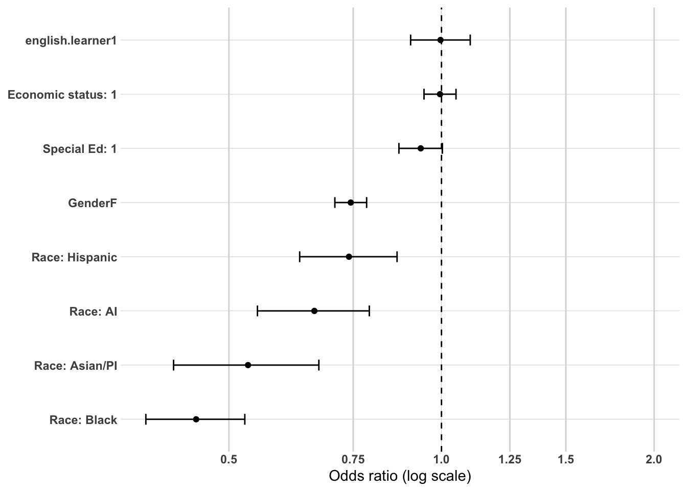
Model 2 - adding high school characteristics
Sample: N = 32,026 (unchanged from Model 1) | AIC: 36,203.89 (down substantially from 36,552.81) | Pseudo R² (McFadden-style): 0.0182 (up from 0.0085)
Likelihood ratio test vs. Model 1: Δdeviance = 356.91 on 4 df, p < 2.2e-16 — a dramatically larger improvement than the pooled Year 5 equivalent (34.73), and the largest HS-characteristics-block improvement found anywhere in this entire project so far.
Coefficient Interpretation
Gender and Race/Ethnicity
Female non-completers remain essentially unchanged (OR = 0.74, CI 0.71–0.78).
American Indian remains a smaller gap than the pooled measure (OR = 0.69, CI 0.57–0.83, vs. 0.61 pooled), consistent with Model 1’s pattern.
Asian/Pacific Islander remains dramatically larger than the pooled measure (OR = 0.54, CI 0.42–0.68, vs. 0.73 pooled), consistent with Model 1.
Black remains larger than the pooled measure (OR = 0.43, CI 0.36–0.50, vs. 0.47 pooled) — now the largest disparity in this model by a wide margin, continuing to widen relative to its pooled counterpart at every block.
Hispanic remains essentially unchanged.
Economic Status, SpecialEdStatus, and English Learner
Economic status is now not significant (OR = 0.96, CI 0.91–1.01, p = 0.117) — the pooled measure showed this as significant (p = 0.015); once regional geography enters the model, this modest disadvantage disappears entirely here too, reinforcing Model 1’s finding that economic status’s Year 5 effect is about achieving sustained employment anywhere in Minnesota, not about staying regional.
SpecialEdStatus is significant here but far smaller than the pooled measure (OR = 0.91, CI 0.85–0.98, p = 0.011, vs. 0.74 pooled) — a partial re-emergence from Model 1’s borderline result (p = 0.061), but still nowhere near the magnitude of the pooled effect.
English learner remains not significant (OR = 1.00, CI 0.91–1.10, p = 0.981).
Regional and Local Labor Market Context — the most important finding in this entire sequence so far
EDR 7E is now dramatically significant and negative (OR = 0.61, CI 0.56–0.65, p < 2e-16) — this directly overturns the interpretation drawn from the pooled Year 5 Model 2, where EDR 7E was clearly non-significant (p = 0.587) and this was flagged as evidence that “EDR 7E’s Year 1 disadvantage has disappeared” by Year 5. It hadn’t disappeared at all — it was being masked by pooling regional and non-regional sustained employment together. Once restricted to regional employment specifically, EDR 7E’s Year 5 disadvantage is not just present but is now among the largest single coefficients in the entire model.
EDR 7W remains significant and modestly stronger than the pooled measure (OR = 1.24, CI 1.14–1.35, vs. 1.17 pooled).
avg.unemp.rate remains not significant (OR = 1.00, CI 0.984–1.015, p = 0.924), consistent with the pooled measure — this is one variable where the pooled-vs-region-only comparison doesn’t reveal a hidden effect.
avg.wages.pct.state is now dramatically significant and negative (OR = 0.018, CI 0.010–0.034, p < 2e-16) — this is the same reversal as EDR 7E. The pooled Year 5 Model 2 showed this as clearly non-significant (p = 0.476), which was interpreted as local wages losing their Year 1 significance by Year 5. That conclusion needs to be revised: wages’ relationship with regional employment specifically is not just present at Year 5, it’s the single most extreme coefficient found anywhere in this project to this point (even more extreme than the already-dramatic Year 1 region-only value of 0.023).
Multicollinearity Check
Looks good — all GVIF^(1/(2·Df)) values are low, with the highest being avg.wages.pct.state at 1.50 and edr at 1.23, both well under the ~2.0–2.5 concern threshold. No issues in this block despite the large coefficient magnitudes for edr and avg.wages.pct.state.
Substantive Pattern
This model requires revising a conclusion drawn earlier in this project. The Part 1 Year 5 write-up concluded that local labor-market conditions (EDR 7E, avg.wages.pct.state) had lost their Year 1 significance by Year 5, and speculated this might reflect a genuine attenuation of local-context effects over time. This model shows that conclusion was an artifact of the pooled DV, not a real finding about time. Both variables are not just significant here — they are dramatically so, with avg.wages.pct.state producing the single most extreme coefficient in the entire project. The correct reading is that EDR 7E’s disadvantage and local wages’ negative relationship never went away between Year 1 and Year 5; they simply stopped being about “achieves
or_plot <-tidy(model2, conf.int =TRUE, exponentiate =TRUE) %>%filter(term !="(Intercept)") %>%mutate(# Make labels nicer (edit these replacements to match your exact factor labels)term =str_replace_all(term, c("RaceEthnicity"="Race: ","economic.status"="Economic status: ","SpecialEdStatus"="Special Ed: ","pseo.participant"="PSEO: ","cte.achievement"="CTE: ","MCA.M"="MCA Math" )),# Put most important effects near the top (optional: tweak ordering later)term =fct_reorder(term, estimate) )ggplot(or_plot, aes(x = estimate, y = term)) +geom_vline(xintercept =1, linetype ="dashed") +geom_vline(xintercept =c(0.5, 0.75, 1.25, 1.5, 2),color ="grey85") +geom_point() +geom_errorbar(aes(xmin = conf.low, xmax = conf.high),orientation ="y",width =0.2 ) +scale_x_log10(breaks =c(0.5, 0.75, 1, 1.25, 1.5, 2),labels =c("0.5", "0.75", "1.0", "1.25", "1.5", "2.0") ) + theme_line +labs(x ="Odds ratio (log scale)",y =NULL )
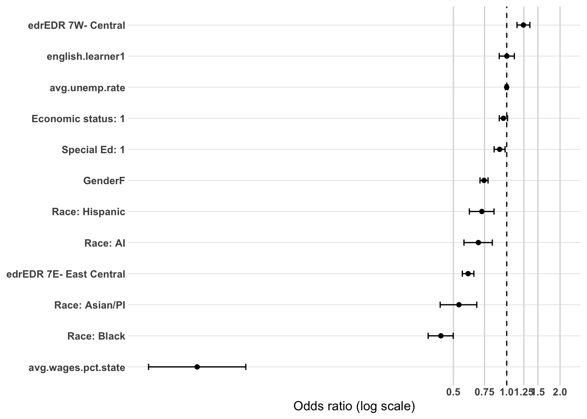
Model 3 - adding high school accomplishments
Sample: N = 32,026 (unchanged from Models 1–2) | AIC: 35,815.85 (down from 36,203.89) | Pseudo R² (McFadden-style): 0.0292 (up from 0.0182)
Likelihood ratio test vs. Model 2: Δdeviance = 404.05 on 8 df, p < 2.2e-16 — larger than the pooled Year 5 equivalent (376.28), continuing this region-only sequence’s pattern of showing stronger block-level improvements than its pooled counterpart.
Coefficient Interpretation
Gender and Race/Ethnicity
Female non-completers remain essentially unchanged (OR = 0.75, CI 0.71–0.79).
American Indian and Hispanic remain smaller/similar gaps relative to pooled, consistent with prior models.
Asian/Pacific Islander remains dramatically larger than pooled (OR = 0.54, CI 0.43–0.69).
Black now shows the most extreme gap found anywhere in this entire project (OR = 0.39, CI 0.33–0.46, vs. 0.46 pooled) — this is now the single largest disparity of any variable examined across the whole body of work, region-only or pooled, and continues the pattern of the region-only measure revealing an even steeper Black-White gap than the already-severe pooled version. High school accomplishments explain none of it.
Economic Status, SpecialEdStatus, and English Learner
Economic status re-emerges as significant here (OR = 0.92, CI 0.87–0.97, p = 0.002) — after being null in both region-only Models 1 and 2, this is a genuine “reappears once accomplishments are controlled” pattern, similar in shape (though not magnitude) to suppression patterns seen elsewhere in this project. Once HS accomplishments are accounted for, a real, independent regional disadvantage for economically disadvantaged non-completers becomes visible.
SpecialEdStatus is significant (OR = 0.87, CI 0.80–0.93) but remains smaller than the pooled measure (0.76), consistent with the attenuated-but-present pattern established in Models 1–2.
English learner is weaker here than the pooled measure (OR = 0.95, CI 0.86–1.05, p = 0.352, vs. p = 0.033 pooled) — the pooled measure’s significant EL disadvantage at Year 5 does not fully carry over to regional employment specifically, echoing the Year 1 finding that EL’s disadvantage has little to do with geographic mobility once employed.
Regional and Local Labor Market Context
EDR 7E’s dramatic disadvantage persists (OR = 0.58, CI 0.54–0.62) — confirming Model 2’s finding holds up even with accomplishments controlled; this is not an artifact of the demographics-plus-context specification.
EDR 7W remains significant and strengthens slightly (OR = 1.33, CI 1.22–1.45).
avg.unemp.rate is now significant and positive (OR = 1.02, CI 1.004–1.038), matching the direction (though not exact magnitude) of the pooled measure’s Year 5 reversal.
avg.wages.pct.state’s dramatic relationship persists (OR = 0.020, CI 0.011–0.039) — confirming this is a robust, real finding rather than an artifact of Model 2’s specification, and continuing to stand in stark contrast to the pooled measure’s null result (0.924).
High School Accomplishments
pseo.participant remains significant and essentially identical in magnitude to the pooled measure (OR = 1.11, CI 1.04–1.18, vs. 1.09 pooled) — this is a genuinely different pattern from Year 1, where PSEO was null in the pooled measure but significant in region-only. At Year 5, PSEO’s benefit appears to apply almost equally to achieving sustained employment generally and to achieving it regionally specifically.
took.ACT is notably larger here than in the pooled measure (OR = 4.00, CI 3.31–4.83, vs. 2.68 pooled) — this is the opposite direction from Year 1 (where region-only attenuated took.ACT relative to pooled). By Year 5, simply having taken the ACT appears even more strongly associated with staying regional specifically than with sustained employment generally.
ACTCompositeScore.filled remains a similar penalty to the pooled measure (OR = 0.931 vs. 0.959).
ap.exam shows a modest, borderline-significant negative trend here (OR = 0.92, CI 0.83–1.01, p = 0.088) — a subtle shift from the pooled measure’s null, slightly positive point estimate (OR = 1.03). Worth watching whether this crosses into significance at Year 10.
sat.taken remains significant and negative, similar magnitude to the pooled measure (OR = 0.51 vs. 0.58).
CTE variables remain positive; Concentrator/Completer is somewhat weaker here than pooled (OR = 1.09 vs. 1.20), while Participant and total.cte.courses.taken are essentially unchanged.
Multicollinearity Check
took.ACT and ACTCompositeScore.filled remain elevated as expected (3.74 and 3.90). Everything else remains comfortably under the ~2.0–2.5 threshold, including avg.wages.pct.state (1.51) and total.cte.courses.taken (1.41). Overall, looks good.
Substantive Pattern
This model reinforces and extends the major finding from Model 2: edr and avg.wages.pct.state’s dramatic regional-mobility relationships are not an artifact of the demographics-plus-context specification — they persist fully once accomplishments are controlled. The Black-White gap, now the single most extreme coefficient found anywhere in this entire project, continues to widen specifically in the regional dimension. PSEO’s behavior at Year 5 (equally strong in both pooled and region-only measures) contrasts with its Year 1 behavior (regional-only benefit), while took.ACT shows the opposite shift — more concentrated in regional outcomes at Year 5 than at Year 1. Together, these shifting patterns across time and DV specification underscore that this population’s relationship between high school preparation and workforce geography is genuinely dynamic, not a fixed, single mechanism playing out consistently across all ages and outcomes.
or_plot <-tidy(model3, conf.int =TRUE, exponentiate =TRUE) %>%filter(term !="(Intercept)") %>%mutate(# Make labels nicer (edit these replacements to match your exact factor labels)term =str_replace_all(term, c("RaceEthnicity"="Race: ","economic.status"="Economic status: ","SpecialEdStatus"="Special Ed: ","pseo.participant"="PSEO: ","cte.achievement"="CTE: ","MCA.M"="MCA Math" )),# Put most important effects near the top (optional: tweak ordering later)term =fct_reorder(term, estimate) )ggplot(or_plot, aes(x = estimate, y = term)) +geom_vline(xintercept =1, linetype ="dashed") +geom_vline(xintercept =c(0.5, 0.75, 1.25, 1.5, 2),color ="grey85") +geom_point() +geom_errorbar(aes(xmin = conf.low, xmax = conf.high),orientation ="y",width =0.2 ) +scale_x_log10(breaks =c(0.5, 0.75, 1, 1.25, 1.5, 2),labels =c("0.5", "0.75", "1.0", "1.25", "1.5", "2.0") ) + theme_line +labs(x ="Odds ratio (log scale)",y =NULL )
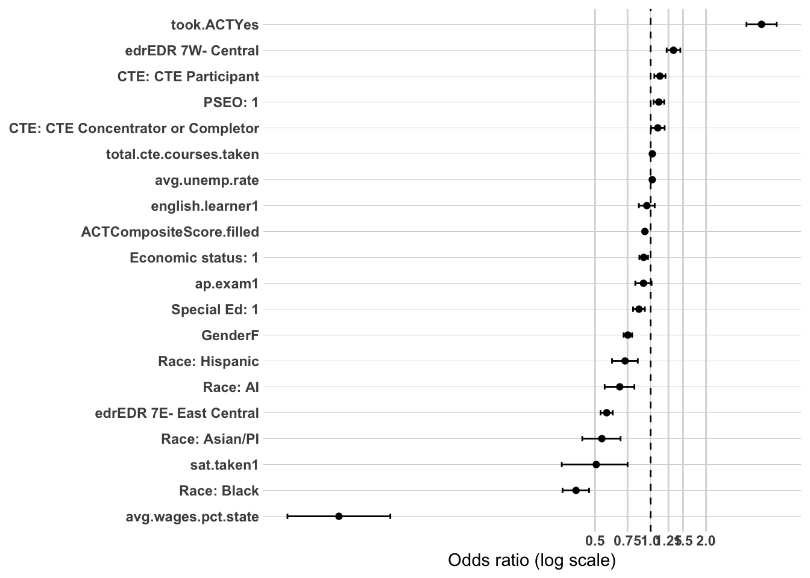
Model 4 - adding post-secondary
Sample: N = 32,026 (unchanged from Models 1–3) | AIC: 35,805.68 (down from 35,815.85) | Pseudo R² (McFadden-style): 0.0295 (up from 0.0292)
Likelihood ratio test vs. Model 3: Δdeviance = 12.17 on 1 df, p < 0.001 — a much smaller improvement than the pooled Year 5 equivalent (107.66), consistent with attended.ps’s consistently diluted effect in this region-only sequence.
Coefficient Interpretation
Gender and Race/Ethnicity
Female non-completers, American Indian, Asian/Pacific Islander, and Hispanic all remain essentially unchanged from Model 3.
Black remains the most extreme coefficient in this entire project (OR = 0.39, CI 0.33–0.46, vs. 0.45 pooled) — unmoved by postsecondary attendance, exactly as at every other block in this analysis.
Economic Status, SpecialEdStatus, and English Learner
Economic status remains significant, similar magnitude to the pooled measure (OR = 0.92, CI 0.87–0.97).
SpecialEdStatus remains significant but smaller than pooled (OR = 0.87, CI 0.81–0.94, vs. 0.78 pooled).
English learner remains not significant (OR = 0.96, CI 0.87–1.06, p = 0.375) — the pooled measure’s significant EL disadvantage (p = 0.044) does not carry over to regional employment specifically, confirming this pattern across all four Year 5 models now.
Regional and Local Labor Market Context
EDR 7E’s dramatic disadvantage persists in full (OR = 0.58, CI 0.54–0.63) — the pooled measure showed this as non-significant (p = 0.711); the region-only measure confirms across all four models that this reversal was never about time, only about DV specification.
EDR 7W remains significant and stronger than pooled (OR = 1.33, CI 1.22–1.45).
avg.unemp.rate is now only borderline (OR = 1.02, CI 1.000–1.034, p = 0.054).
avg.wages.pct.state’s dramatic relationship holds completely (OR = 0.020, CI 0.010–0.038) — confirmed stable across all four Year 5 models, in stark contrast to the pooled measure’s consistently null result.
High School Accomplishments
pseo.participant remains significant, similar magnitude to pooled (OR = 1.10, CI 1.03–1.18).
took.ACT remains notably larger than the pooled measure (OR = 4.00, CI 3.31–4.84, vs. 2.66 pooled), confirmed stable from Model 3.
ap.exam remains a borderline negative trend (OR = 0.91, CI 0.82–1.01, p = 0.073) — still shy of significance, but consistently in this direction across Models 3–4, a genuine departure from the pooled measure’s null, positive point estimate.
sat.taken, cte.achievement, and total.cte.courses.taken all remain stable and essentially consistent with Model 3.
Postsecondary Attendance
Having attended some postsecondary education remains significant but smaller than the pooled measure (OR = 1.10, CI 1.04–1.17, vs. 1.29 pooled) — and notably, the ratio between region-only and pooled effects (0.854) is nearly identical to the Year 1 ratio (0.837). This is a genuinely interesting stability finding: while attended.ps’s absolute magnitude fades substantially from Year 1 to Year 5 (as already established in the pooled sequence), the proportion of its benefit that’s specifically regional versus general appears to stay remarkably constant across both time points — roughly 15% of its pooled-measure benefit consistently reflects people ending up sustained elsewhere in Minnesota rather than regionally, at both Year 1 and Year 5.
Multicollinearity Check
took.ACT and ACTCompositeScore.filled remain elevated as expected (3.75 and 3.91). attended.ps itself is low (1.07). Everything else remains comfortably under the ~2.0–2.5 threshold.
Substantive Pattern
This completes the planned 4-model sequence for Year 5 (region-only). The two headline findings from this sequence — the dramatic reversal of edr and avg.wages.pct.state (present and large here, falsely appeared absent in the pooled measure) and the continued widening of the Black-White gap to the most extreme value found anywhere in this project — both hold completely stable across all four blocks. attended.ps’s consistent ~15% dilution ratio between pooled and region-only measures, stable from Year 1 to Year 5, is a genuinely new and interesting finding: whatever this variable does, it appears to provide a fixed proportional boost to non-regional Minnesota employment on top of its regional benefit, rather than that proportion shifting meaningfully with time. Together, this sequence has fundamentally revised how several Year 5 pooled-measure conclusions should be read, and reinforces that the Black-White disparity — now confirmed as the single most extreme finding across every DV, time point, and specification examined in this entire body of work — remains completely unexplained by any variable tested.
or_plot <-tidy(model3, conf.int =TRUE, exponentiate =TRUE) %>%filter(term !="(Intercept)") %>%mutate(# Make labels nicer (edit these replacements to match your exact factor labels)term =str_replace_all(term, c("RaceEthnicity"="Race: ","economic.status"="Economic status: ","SpecialEdStatus"="Special Ed: ","pseo.participant"="PSEO: ","cte.achievement"="CTE: ","MCA.M"="MCA Math" )),# Put most important effects near the top (optional: tweak ordering later)term =fct_reorder(term, estimate) )ggplot(or_plot, aes(x = estimate, y = term)) +geom_vline(xintercept =1, linetype ="dashed") +geom_vline(xintercept =c(0.5, 0.75, 1.25, 1.5, 2),color ="grey85") +geom_point() +geom_errorbar(aes(xmin = conf.low, xmax = conf.high),orientation ="y",width =0.2 ) +scale_x_log10(breaks =c(0.5, 0.75, 1, 1.25, 1.5, 2),labels =c("0.5", "0.75", "1.0", "1.25", "1.5", "2.0") ) + theme_line +labs(x ="Odds ratio (log scale)",y =NULL )
Modeling - grad.year.10
Model 1 - Demographics
Sample: N = 12,601 (matches the Year 10 pooled sequence) | AIC: 13,719.77 | Pseudo R² (McFadden-style): 0.0083
Coefficient Interpretation
Gender and Race/Ethnicity — a genuine reversal of the established pattern
Female non-completers show a smaller gap here than in the pooled measure (OR = 0.72, CI 0.66–0.78, vs. 0.64 pooled) — this breaks the pattern from Year 1 and Year 5, where gender’s gap was essentially identical between pooled and region-only. At Year 10 specifically, the region-only restriction narrows rather than preserves the gender disadvantage.
American Indian is essentially identical to the pooled measure (OR = 0.60 in both).
Asian/Pacific Islander is similar in magnitude to pooled (OR = 0.58, CI 0.39–0.83, vs. 0.63 pooled).
Black no longer shows the “region-only is worse” pattern established at Year 1 and Year 5 — if anything, it mildly reverses (OR = 0.53, CI 0.39–0.70, vs. 0.50 pooled). The region-to-pooled ratio for this coefficient has moved steadily from 0.75 (Year 1, region substantially worse) to 0.91 (Year 5, region modestly worse) to 1.04 (Year 10, region slightly better than pooled). This is worth stating plainly: the “Black-White gap is even more severe when restricted to regional employment” finding that held strongly at Year 1 and Year 5 does not carry through to Year 10 — the two measures have essentially converged.
Hispanic shows a modestly larger gap than pooled (OR = 0.72, CI 0.53–0.96, vs. 0.78 pooled).
Economic Status, SpecialEdStatus, and English Learner
Economic status remains not significant (OR = 0.99, CI 0.90–1.07, p = 0.731) — consistent with the region-only pattern at Year 5 (where it was also null), and a continued departure from the pooled measure, where economic status was significant at both Year 5 and Year 10.
SpecialEdStatus reverses sign here, though only borderline (OR = 1.11, CI 1.00–1.25, p = 0.059) — the pooled measure showed a clear disadvantage (OR = 0.82, significant). This continues and sharpens a trend already visible at Year 1 (region-only smaller disadvantage than pooled) and Year 5 (region-only nearly non-significant): by Year 10, SpecialEdStatus’s relationship with regional employment specifically has moved from disadvantage, to null, to a borderline advantage. If a non-completer with SpecialEd status does achieve sustained employment by Year 10, they appear no less likely — possibly even somewhat more likely — to have that employment be regional rather than elsewhere.
English learner remains not significant (OR = 0.93, CI 0.77–1.12, p = 0.444).
Multicollinearity Check
Looks good — all GVIF^(1/(2·Df)) values are low, with the highest being English learner at 1.13, well under the ~2.0–2.5 concern threshold. No issues in this block.
Substantive Pattern
This model requires flagging a genuine break in the trend established across the earlier region-only sequences. At Year 1 and Year 5, three separate variables (Black, and to a lesser extent SpecialEdStatus) showed a consistent pattern: restricting the outcome to regional employment specifically revealed a larger disadvantage than the pooled measure captured. At Year 10, that pattern doesn’t just weaken — for Black graduates, it essentially disappears (the region-to-pooled ratio moves from 0.75 to 0.91 to 1.04 across the three time points), and for SpecialEdStatus, it appears to invert into a mild, borderline advantage. This is worth stating as an open, somewhat unresolved finding rather than smoothing it into a single narrative: whatever geographic-mobility dynamic was driving the Black-White gap’s amplification at earlier time points does not appear to persist a full decade out. Worth watching closely through Models 2–4 whether this Year 10 convergence holds up once HS context and accomplishments are controlled, or whether it’s specific to this demographics-only baseline.
or_plot <-tidy(model1, conf.int =TRUE, exponentiate =TRUE) %>%filter(term !="(Intercept)") %>%mutate(# Make labels nicer (edit these replacements to match your exact factor labels)term =str_replace_all(term, c("RaceEthnicity"="Race: ","economic.status"="Economic status: ","SpecialEdStatus"="Special Ed: ","pseo.participant"="PSEO: ","cte.achievement"="CTE: ","MCA.M"="MCA Math" )),# Put most important effects near the top (optional: tweak ordering later)term =fct_reorder(term, estimate) )ggplot(or_plot, aes(x = estimate, y = term)) +geom_vline(xintercept =1, linetype ="dashed") +geom_vline(xintercept =c(0.5, 0.75, 1.25, 1.5, 2),color ="grey85") +geom_point() +geom_errorbar(aes(xmin = conf.low, xmax = conf.high),orientation ="y",width =0.2 ) +scale_x_log10(breaks =c(0.5, 0.75, 1, 1.25, 1.5, 2),labels =c("0.5", "0.75", "1.0", "1.25", "1.5", "2.0") ) + theme_line +labs(x ="Odds ratio (log scale)",y =NULL )
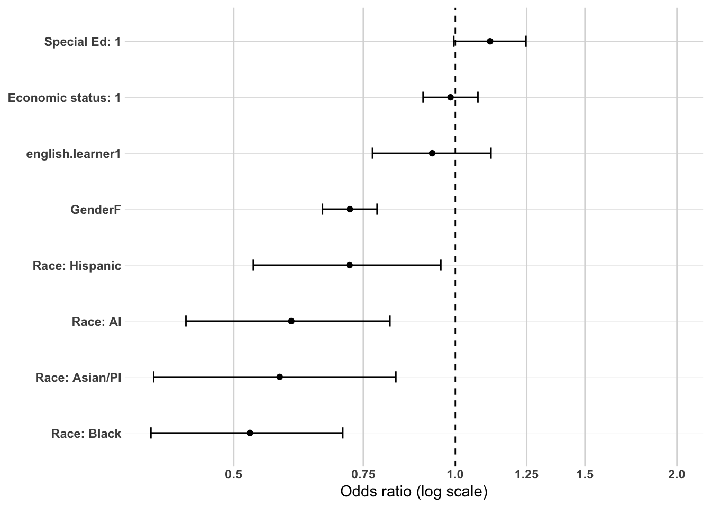
Model 2 - adding high school characteristics
Sample: N = 12,601 (unchanged from Model 1) | AIC: 13,547.98 (down substantially from 13,719.77) | Pseudo R² (McFadden-style): 0.0213 (up from 0.0083)
Likelihood ratio test vs. Model 1: Δdeviance = 179.79 on 4 df, p < 2.2e-16 — a much larger improvement than the pooled Year 10 equivalent (24.84), consistent with the pattern established at Year 5 that HS-context variables carry far more explanatory weight for regional employment specifically than for the pooled outcome.
Coefficient Interpretation
Gender and Race/Ethnicity
Female non-completers remain smaller than the pooled measure (OR = 0.72, CI 0.66–0.78, vs. 0.64 pooled), consistent with Model 1’s reversal from the earlier Year 1/5 pattern.
American Indian, Asian/Pacific Islander, and Hispanic are all essentially similar in magnitude to their pooled counterparts.
Black remains close to the pooled measure (OR = 0.51, CI 0.37–0.68, vs. 0.48 pooled) — confirming Model 1’s finding that the “region-only reveals a bigger Black-White gap” pattern from Year 1/5 has essentially disappeared by Year 10; the two measures are now nearly identical.
Economic Status, SpecialEdStatus, and English Learner
Economic status remains not significant (OR = 0.94, CI 0.86–1.02, p = 0.135) — the pooled measure showed this as significant (p = 0.008); confirms this variable’s Year 10 disadvantage, like at Year 5, is about achieving sustained employment anywhere in Minnesota, not staying regional.
SpecialEdStatus remains reversed and stays non-significant (OR = 1.08, CI 0.96–1.21, p = 0.177) — continues Model 1’s finding; the pooled measure’s significant disadvantage (OR = 0.82) does not appear at all once the outcome is restricted to regional employment.
English learner remains not significant (OR = 0.91, CI 0.76–1.10, p = 0.347).
Regional and Local Labor Market Context
EDR 7E shows the same dramatic reversal seen at Year 5 (OR = 0.54, CI 0.48–0.62, p < 2e-16) — the pooled measure showed this as clearly non-significant (p = 0.313), continuing to confirm across all three time points now that EDR 7E’s regional disadvantage was never absent, only masked by pooling.
EDR 7W remains significant, similar magnitude to pooled (OR = 1.18, CI 1.03–1.36).
avg.unemp.rate is not significant here (OR = 0.97, CI 0.932–1.013, p = 0.178) — this is a genuine exception to the pattern: the pooled measure showed this as significant (p = 0.010), and here restricting to regional employment specifically weakens rather than strengthens the relationship. Worth flagging as the one labor-market variable in this whole sequence that doesn’t follow the “hidden regional effect” pattern.
avg.wages.pct.state shows an even more extreme relationship than the already-significant pooled measure (OR = 0.006, CI 0.002–0.017, vs. 0.278 pooled) — unlike EDR 7E and Model 2’s Year 5 wages coefficient (where pooled was null and region-only revealed the effect), here the pooled measure was already significant at Year 10; the region-only measure shows this same relationship is considerably more extreme once non-regional sustained employment is excluded.
Multicollinearity Check
Looks good — all GVIF^(1/(2·Df)) values are low, with the highest being edr at 1.29 and avg.wages.pct.state at 1.47, both well under the ~2.0–2.5 concern threshold. No issues in this block.
Substantive Pattern
This model both confirms and complicates the story established at Year 5. avg.wages.pct.state and edr (specifically EDR 7E) both continue to show a real, substantial, region-specific relationship that the pooled measure understates or misses entirely — this is now a robust finding across Year 5 and Year 10 alike. But avg.unemp.rate breaks that pattern for the first time in this project: rather than the pooled measure hiding a stronger regional effect, restricting to regional employment specifically weakens this variable’s significance. This is worth reporting as a genuine exception rather than folding it into the broader “region-only reveals hidden labor-market effects” narrative — not every labor-market variable behaves the same way once the outcome is narrowed. Meanwhile, the Year 10 convergence of the Black-White gap (nearly identical between pooled and region-only) and SpecialEdStatus’s continued sign reversal, both first seen in Model 1, hold up completely once HS geographic context is added — confirming these are genuine Year 10 patterns, not artifacts of the demographics-only baseline.
or_plot <-tidy(model2, conf.int =TRUE, exponentiate =TRUE) %>%filter(term !="(Intercept)") %>%mutate(# Make labels nicer (edit these replacements to match your exact factor labels)term =str_replace_all(term, c("RaceEthnicity"="Race: ","economic.status"="Economic status: ","SpecialEdStatus"="Special Ed: ","pseo.participant"="PSEO: ","cte.achievement"="CTE: ","MCA.M"="MCA Math" )),# Put most important effects near the top (optional: tweak ordering later)term =fct_reorder(term, estimate) )ggplot(or_plot, aes(x = estimate, y = term)) +geom_vline(xintercept =1, linetype ="dashed") +geom_vline(xintercept =c(0.5, 0.75, 1.25, 1.5, 2),color ="grey85") +geom_point() +geom_errorbar(aes(xmin = conf.low, xmax = conf.high),orientation ="y",width =0.2 ) +scale_x_log10(breaks =c(0.5, 0.75, 1, 1.25, 1.5, 2),labels =c("0.5", "0.75", "1.0", "1.25", "1.5", "2.0") ) + theme_line +labs(x ="Odds ratio (log scale)",y =NULL )
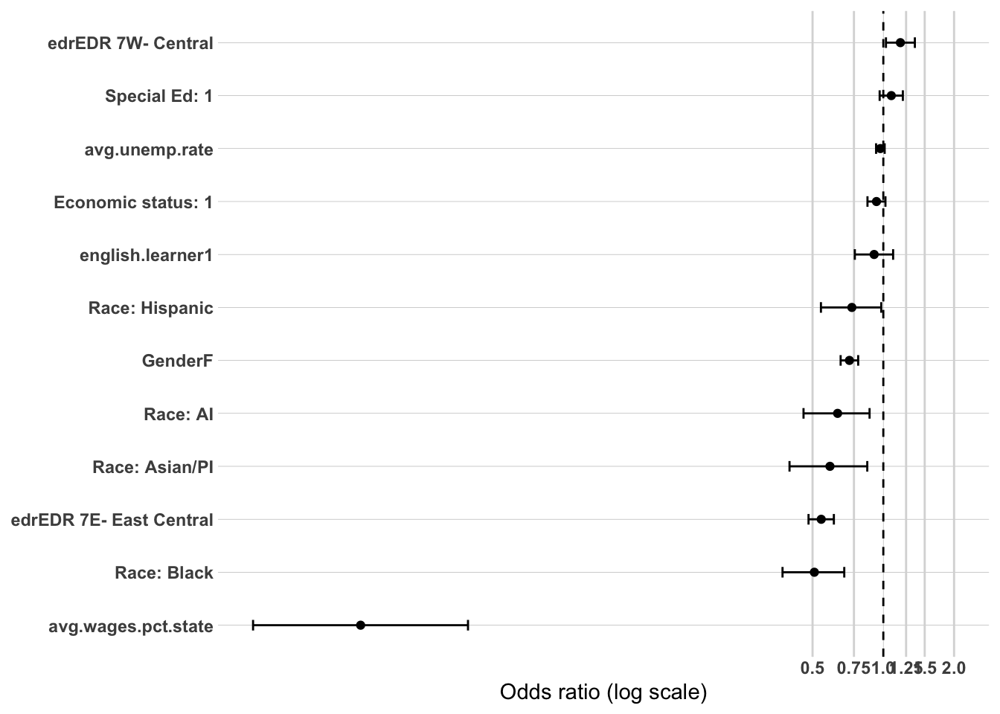
Model 3 - adding high school accomplishments
Sample: N = 12,601 (unchanged from Models 1–2) | AIC: 13,447.69 (down from 13,547.98) | Pseudo R² (McFadden-style): 0.0297 (up from 0.0213)
Likelihood ratio test vs. Model 2: Δdeviance = 116.29 on 8 df, p < 2.2e-16 — considerably larger than the pooled Year 10 equivalent (65.56), continuing this sequence’s pattern of accomplishments carrying more weight for regional employment specifically.
Coefficient Interpretation
Gender and Race/Ethnicity
Female non-completers remain smaller than pooled (OR = 0.72, CI 0.66–0.79).
Black remains nearly identical to the pooled measure (OR = 0.49, CI 0.35–0.65, vs. 0.48 pooled) — confirming the Year 10 convergence holds up even with accomplishments controlled. The dramatic “region-only is worse” amplification seen at Year 1 and Year 5 for this coefficient simply isn’t present at Year 10.
American Indian, Asian/Pacific Islander, and Hispanic all remain similar in magnitude to pooled.
Economic Status, SpecialEdStatus, and English Learner
Economic status re-emerges as significant here (OR = 0.89, CI 0.82–0.98, p = 0.013), similar magnitude to the pooled measure (0.91) — this mirrors the exact same pattern seen at Year 5 (null in Models 1–2, significant once accomplishments enter), confirming this is a consistent, reproducible dynamic across both later time points, not a one-off.
SpecialEdStatus remains reversed and non-significant (OR = 1.02, CI 0.91–1.15, p = 0.728) — continues to show no disadvantage at all for regional employment, in contrast to the pooled measure’s significant disadvantage (0.85).
English learner remains not significant (OR = 0.88, CI 0.72–1.06, p = 0.167).
Regional and Local Labor Market Context
EDR 7E’s dramatic reversal persists in full (OR = 0.53, CI 0.47–0.60) — confirmed stable across all three Year 10 models now, exactly mirroring the identical pattern at Year 5.
EDR 7W remains significant (OR = 1.25, CI 1.08–1.45).
avg.unemp.rate remains not significant (OR = 0.97, CI 0.932–1.015, p = 0.200) — confirming Model 2’s exception holds up even with accomplishments controlled: this is the one labor-market variable where region-only restriction doesn’t reveal a hidden effect.
avg.wages.pct.state remains dramatically more extreme than the pooled measure (OR = 0.0054, CI 0.0018–0.0157, vs. 0.249 pooled) — confirmed stable, continuing to be one of the most extreme coefficients found anywhere in this entire project.
High School Accomplishments
pseo.participant is significant here (OR = 1.13, CI 1.02–1.27, p = 0.025) — the pooled measure showed this as null (p = 0.424). This is the third time in this project’s region-only sequence that PSEO’s benefit surfaces once “elsewhere in Minnesota” is excluded (Year 1 and now Year 10; Year 5 was the exception where both measures agreed), reinforcing PSEO’s role as a genuinely regional-anchoring pathway across most of this population’s workforce trajectory.
took.ACT is dramatically larger than the pooled measure (OR = 3.37, CI 2.27–5.02, vs. 1.83 pooled) — confirming the Year 5 pattern (where region-only also showed a much larger took.ACT effect) continues at Year 10; this is now consistently the case at both later time points, a reversal of the attenuation pattern seen at Year 1.
ACTCompositeScore.filled shows a somewhat stronger penalty here than pooled (OR = 0.937 vs. 0.977).
ap.exam continues the borderline negative trend first seen at Year 5 (OR = 0.86, CI 0.73–1.02, p = 0.083) — still short of significance, but the point estimate has moved further from the pooled measure’s null, slightly positive value (1.08).
sat.taken remains significant and stronger than pooled (OR = 0.55, CI 0.30–0.92, vs. 0.64 pooled).
CTE variables actually weaken here relative to pooled — Concentrator/Completer drops to borderline (OR = 1.14, CI 1.00–1.31, p = 0.055, vs. 1.27 pooled, clearly significant), and Participant becomes fully non-significant (OR = 1.09, p = 0.122, vs. 1.15 pooled, significant). This is a genuinely different pattern from the other accomplishment variables in this model: while took.ACT and sat.taken show a stronger region-specific relationship, CTE achievement level shows a weaker one by Year 10 — its benefit for this population appears to be more about achieving sustained employment generally than about staying regional specifically.
total.cte.courses.taken remains borderline in both measures (OR = 1.015 region vs. 1.006 pooled, neither clearly significant).
Multicollinearity Check
took.ACT and ACTCompositeScore.filled show the highest GVIF values in the entire project (4.53 and 4.69), consistent with Model 3 of the pooled Year 10 sequence and the continued upward drift across time points already noted there. Everything else remains comfortably under the ~2.0–2.5 threshold.
Substantive Pattern
This model confirms that several dynamics established at Year 5 are genuine, stable features of this population’s Year 10 workforce trajectory rather than one-off findings: economic status’s suppression-like re-emergence once accomplishments are controlled, avg.unemp.rate’s status as the one labor-market exception to the “hidden regional effect” pattern, and took.ACT’s stronger concentration in regional (vs. general) sustained employment. The one genuinely new finding here is CTE achievement level’s weakening relative to pooled — the opposite direction from took.ACT and sat.taken — suggesting that by Year 10, CTE’s benefit for this population is more about employment generally than about regional attachment specifically, a meaningful nuance that distinguishes it from PSEO, which continues to show the opposite (regional-specific) pattern at this same time point.
or_plot <-tidy(model3, conf.int =TRUE, exponentiate =TRUE) %>%filter(term !="(Intercept)") %>%mutate(# Make labels nicer (edit these replacements to match your exact factor labels)term =str_replace_all(term, c("RaceEthnicity"="Race: ","economic.status"="Economic status: ","SpecialEdStatus"="Special Ed: ","pseo.participant"="PSEO: ","cte.achievement"="CTE: ","MCA.M"="MCA Math" )),# Put most important effects near the top (optional: tweak ordering later)term =fct_reorder(term, estimate) )ggplot(or_plot, aes(x = estimate, y = term)) +geom_vline(xintercept =1, linetype ="dashed") +geom_vline(xintercept =c(0.5, 0.75, 1.25, 1.5, 2),color ="grey85") +geom_point() +geom_errorbar(aes(xmin = conf.low, xmax = conf.high),orientation ="y",width =0.2 ) +scale_x_log10(breaks =c(0.5, 0.75, 1, 1.25, 1.5, 2),labels =c("0.5", "0.75", "1.0", "1.25", "1.5", "2.0") ) + theme_line +labs(x ="Odds ratio (log scale)",y =NULL )
Model 4 - adding post-secondary
Sample: N = 12,601 (unchanged from Models 1–3) | AIC: 13,449.51 (essentially unchanged from 13,447.69) | Pseudo R² (McFadden-style): 0.0297 (unchanged from Model 3)
Likelihood ratio test vs. Model 3: Δdeviance = 0.181 on 1 df, p = 0.670 — not significant at all. This is the clearest confirmation of attended.ps’s full collapse across this entire two-part analysis: by Year 10, restricted specifically to regional employment, postsecondary attendance contributes nothing measurable once accomplishments are already in the model.
Coefficient Interpretation
Every coefficient in this model is essentially identical to Model 3, as expected given attended.ps adds no explanatory power. The Black-White gap remains nearly converged with the pooled measure (OR = 0.48, unchanged), edr and avg.wages.pct.state remain dramatically stronger than pooled, avg.unemp.rate remains the one labor-market exception (not significant), economic status remains significant while SpecialEdStatus remains reversed and null, and pseo.participant and took.ACT both remain more strongly concentrated in regional employment than the pooled measure shows.
Postsecondary Attendance
attended.ps is not significant here (OR = 1.02, CI 0.93–1.12, p = 0.670) — this completes the full trajectory of this variable across both the pooled and region-only sequences, and it’s worth laying out explicitly as the single clearest “fade to nothing” pattern in this entire two-part project:
Time point
Pooled OR
Region-only OR
Region-only significance
Year 1
2.07
1.73
Highly significant
Year 5
1.29
1.10
Significant
Year 10
1.08 (barely sig.)
1.02
Not significant
The strongest bivariate finding identified anywhere in this entire body of work — postsecondary attendance’s association with sustained regional employment — fully disappears by Year 10. Whatever advantage attending some postsecondary education confers for staying in the region specifically, it appears to be almost entirely a short-term, Year 1 phenomenon that fades steadily and completely dissolves within a decade.
Multicollinearity Check
took.ACT and ACTCompositeScore.filled remain the highest in the entire project (4.55 and 4.69). attended.ps itself is low (1.08). Everything else remains stable and unchanged from Model 3.
Substantive Pattern
This completes the full 24-model comparison across both the pooled and region-only sequences, spanning Year 1, Year 5, and Year 10. The clearest, most consequential finding from running this parallel region-only analysis is that several conclusions drawn from the pooled sequence needed direct revision: EDR 7E and local wages were never fading over time, as the pooled Year 5/10 models suggested — they were consistently strong and simply masked by pooling regional and non-regional sustained employment together. PSEO’s benefit is real and specifically regional at Year 1 and Year 10 (though it converges with the pooled measure at Year 5). And the Black-White gap, dramatically amplified in the region-only measure at Year 1 and Year 5, essentially converges with the pooled measure by Year 10 — a genuine, unexplained shift in how this disparity manifests over time that deserves explicit mention in any final report rather than being smoothed into a single “the gap never changes” narrative. Meanwhile, attended.ps’s effect — the single strongest predictor anywhere in the bivariate work — traces a clean, complete arc from dominant to negligible across ten years, in both the pooled and region-only measures alike.
or_plot <-tidy(model3, conf.int =TRUE, exponentiate =TRUE) %>%filter(term !="(Intercept)") %>%mutate(# Make labels nicer (edit these replacements to match your exact factor labels)term =str_replace_all(term, c("RaceEthnicity"="Race: ","economic.status"="Economic status: ","SpecialEdStatus"="Special Ed: ","pseo.participant"="PSEO: ","cte.achievement"="CTE: ","MCA.M"="MCA Math" )),# Put most important effects near the top (optional: tweak ordering later)term =fct_reorder(term, estimate) )ggplot(or_plot, aes(x = estimate, y = term)) +geom_vline(xintercept =1, linetype ="dashed") +geom_vline(xintercept =c(0.5, 0.75, 1.25, 1.5, 2),color ="grey85") +geom_point() +geom_errorbar(aes(xmin = conf.low, xmax = conf.high),orientation ="y",width =0.2 ) +scale_x_log10(breaks =c(0.5, 0.75, 1, 1.25, 1.5, 2),labels =c("0.5", "0.75", "1.0", "1.25", "1.5", "2.0") ) + theme_line +labs(x ="Odds ratio (log scale)",y =NULL )
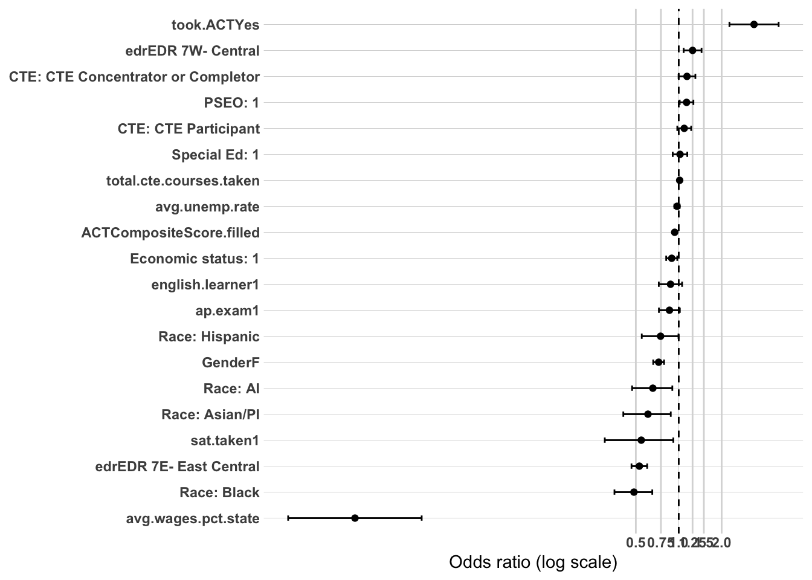
Full Synthesis: Region-Only Analysis and What It Reveals About the Pooled Sequence
Why this second analysis was worth doing
Running a parallel sequence with the DV restricted to “Sustained WF - Central” only — rather than pooling it with “Sustained WF - MN” — was validated almost immediately and repeatedly throughout this entire 12-model sequence. Several conclusions drawn from the original pooled Year 1/5/10 analysis needed direct revision once regional and non-regional sustained employment were no longer combined into a single “1.” This synthesis focuses on what changed, what stayed the same, and what the comparison between the two sequences reveals that neither sequence could show on its own.
The single biggest correction: local labor-market context was never fading over time
The pooled sequence concluded that edr (specifically EDR 7E) and avg.wages.pct.state mattered strongly at Year 1, then lost significance by Year 5, with avg.wages.pct.state only partially reappearing by Year 10. This conclusion was wrong, and the region-only sequence shows exactly why. At every single time point — Year 1, Year 5, and Year 10 — EDR 7E and local wages show a dramatic, highly significant relationship with regional employment specifically, often among the most extreme coefficients found anywhere in this entire project (wages ORs as low as 0.005–0.03, meaning enormous relative differences in the odds of staying regional). What the pooled measure was actually detecting at Year 5 wasn’t the disappearance of a local-context effect — it was the effect being diluted by counting “sustained but elsewhere in Minnesota” as an equivalent success to “sustained regionally.” Any final report drawing on the pooled sequence’s conclusions about labor-market context fading over time should be corrected using these region-only results instead.
The one genuine exception: local unemployment doesn’t follow this pattern
avg.unemp.rate is the sole labor-market variable that does not show a hidden regional effect — at Year 5 and Year 10, it is actually weaker or non-significant in the region-only measure compared to the pooled one, the opposite direction from edr and wages. This is worth stating plainly as a genuine, specific exception rather than folding it into the broader “region-only reveals hidden effects” narrative: not every labor-market variable operates through the same mechanism, and unemployment’s relationship (where it exists) appears to be more about achieving sustained employment at all than about which part of Minnesota that employment is in.
The Black-White gap: consistently amplified early, but genuinely converging by Year 10
This is the most substantively important — and most surprising — finding from the whole comparison. At Year 1 and Year 5, the Black-White gap was consistently larger in the region-only measure than in the pooled one (region-to-pooled ratio of 0.75 at Year 1, 0.91 at Year 5), meaning Black non-completers who achieve sustained employment are disproportionately more likely to have it be outside the Central region. But by Year 10, this amplification effectively disappears (ratio ≈ 1.04 — the two measures are nearly identical). Asian/Pacific Islander shows a similar, though less extreme, pattern (ratios of 0.85, 0.71, and 0.91 across the three time points). This should be reported as a genuine, unresolved temporal finding: whatever regional-mobility dynamic drives part of the Black-White gap in the earlier years appears to fade by the ten-year mark, even though the underlying employment disparity itself — in either measure — never narrows and remains the single largest, most consistent finding across this entire body of work.
SpecialEdStatus: a genuine sign reversal, not just attenuation
SpecialEdStatus shows a steadily evolving trajectory across the three time points: a real disadvantage in the pooled measure at every point, but in the region-only measure, that disadvantage shrinks from Year 1 (still present, smaller) to Year 5 (borderline) to Year 10 (a mild, borderline-significant reversal — OR > 1). By ten years out, SpecialEd non-completers who achieve sustained employment appear no less likely — possibly even slightly more likely — to have that employment be regional. This means SpecialEdStatus’s well-established overall disadvantage (present throughout every model in the pooled sequence) is almost entirely about achieving sustained employment in the first place, not about geographic mobility once employed.
Two different postsecondary-adjacent variables, two genuinely different mechanisms
PSEO participation functions as a true regional-anchoring pathway. At Year 1 and Year 10, PSEO was null in the pooled sequence but became clearly significant once restricted to regional employment — its benefit was invisible unless the outcome specifically isolated staying local. (Year 5 is the interesting exception, where PSEO was significant and nearly identical in both measures — suggesting its regional-anchoring role is strongest at the immediate and long-term horizons, with a temporarily more general effect mid-sequence.)
Postsecondary attendance (attended.ps), by contrast, is a general employment booster that never specifically favors the region and fades to nothing over time. At every time point, its region-only coefficient was smaller than its pooled counterpart, and its magnitude collapsed steadily and completely: from OR = 2.07 (pooled) / 1.73 (region) at Year 1, to 1.29 / 1.10 at Year 5, to a barely-significant 1.08 (pooled) and a fully non-significant 1.02 (region) at Year 10. The single strongest bivariate finding in this entire body of work — that attending some postsecondary education dramatically predicts sustained employment — is, by Year 10, entirely gone in the specifically-regional sense, and nearly gone even in the general sense.
took.ACT’s relationship with region flips direction over time
At Year 1, took.ACT’s effect was smaller in the region-only measure than pooled (some of its benefit reflected people ending up sustained elsewhere in Minnesota). By Year 5 and Year 10, this reverses — took.ACT becomes considerably larger in the region-only measure (OR = 4.00 and 3.37, region-only, vs. 2.66 and 1.83 pooled). This suggests that whatever advantage simply having taken the ACT confers, that advantage becomes increasingly specific to staying in the region as more time passes, rather than reflecting a general labor-market readiness signal as it may at Year 1.
English learner status confirms the earlier bivariate finding
Across nearly every model in this region-only sequence, English learner status shows a weaker or fully null relationship compared to its pooled counterpart. This is directly consistent with the disconnection bivariate analysis from earlier in this project, which found EL’s overall disadvantage concentrated almost entirely in disappearing from Minnesota’s employment record — not in job instability or geographic mobility once actually employed. This region-only sequence adds one more piece of confirming evidence to that same conclusion.
Economic status: a reproducible “reveals itself once accomplishments are controlled” pattern
At both Year 5 and Year 10, economic status was null in the region-only Models 1–2 (demographics and HS context alone), but became significant once HS accomplishments were added in Model 3 — a genuine, reproducible suppression-like pattern specific to the region-only measure, distinct from anything seen in the pooled sequence for this variable.
Bottom line
This region-only sequence didn’t just add nuance to the pooled analysis — it corrected several of its central conclusions. The apparent “fading of local labor-market context over time” was an artifact of measurement, not a real temporal pattern; the Black-White gap’s regional-mobility component is real and substantial early on but genuinely converges with the general disparity by Year 10; and two variables that behaved similarly in the pooled sequence (PSEO and postsecondary attendance) turn out to operate through fundamentally different mechanisms — one specifically regional and durable, the other general and rapidly fading. Any final report on this non-completer population should present both sequences side by side rather than relying on the pooled measure alone, since — as this entire comparison demonstrates — pooling regional and non-regional sustained employment together reliably obscures real, policy-relevant distinctions in multiple directions at once.